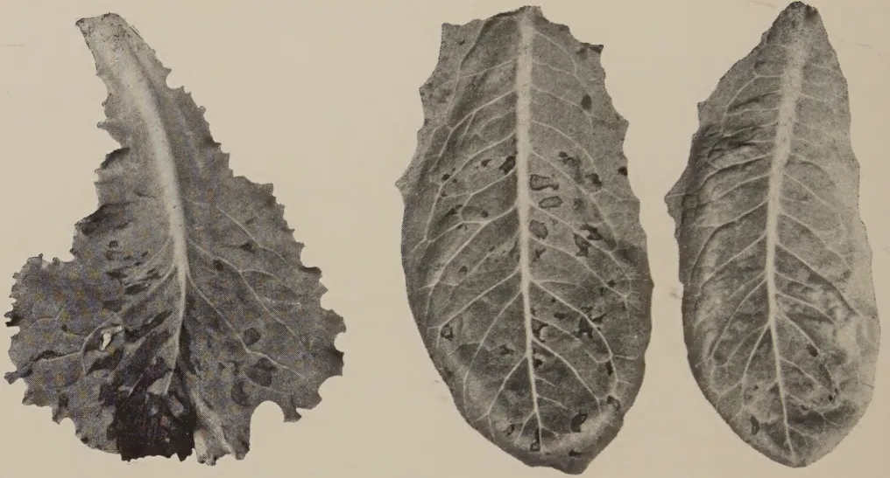
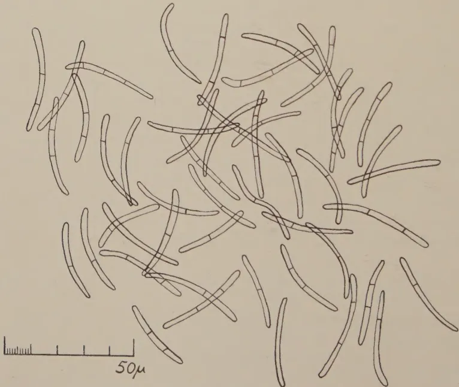
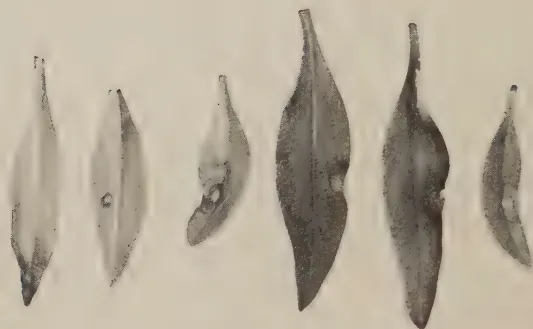
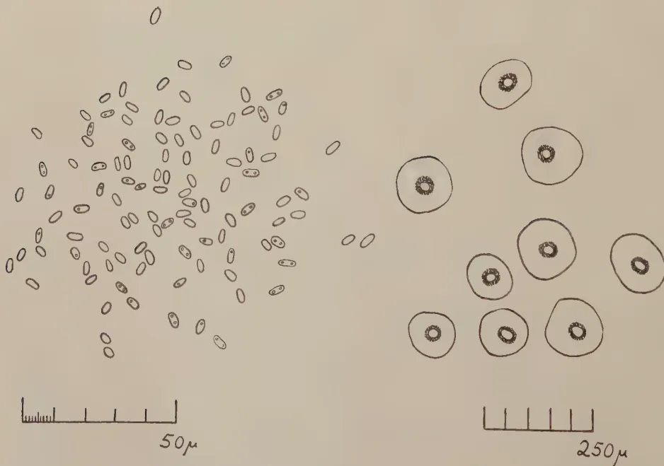

VOL. XCVII
PERADENIYA, AUGUST, 1941.
No. 2
| Page | |
|---|---|
| Editorial .. .. . | 59 |
| Leaf Spot Disease of Lettuce and Antirrhinum. By T. E. T. Bond, Ph.D. (Cantab.) .. .. . | 62 |
| The Potash Content of Coconut Husks and Husk Ash. By M. L. M. Salgado, Ph.D., Dip. Agric. (Cantab.), B.Sc. (Lond.), and E. Chinnarasa, B.Sc. (Lond.) .. .. . | 68 |
| The Nitrogen Content of Ceylon Rain. By D. E. V. Koch, Ph.D., B.Sc., D.I.C. (Lond.), F.I.C., F.R.H.S. .. .. . | 74 |
| The Seed Fat of Garcinia Echinocarpa Thwaites(1)—"Madol Oil". By Reginald Child, B.Sc., Ph.D. (Lond.), F.I.C., and Wilfred R. N. Nathanael, B.Sc. (Lond.) .. .. . | 78 |
| Jams and Jellies from Ceylon Fruits .. .. . | 82 |
| Tung Oil: Trials in Ceylon .. .. . | 87 |
| A Method of Compost-making used in Nyasaland .. .. . | 95 |
| The Manufacture of Dried Banana Products .. .. . | 99 |
| Minutes of the Board of the Tea Research Institute .. .. . | 103 |
| Minutes of the Rubber Research Board .. .. . | 107 |
| Statistical Analysis of Experiments .. .. . | 110 |
| Animal Disease Return for the Month ended July, 1941 .. .. . | 111 |
| Meteorological Report for the month ended July, 1941. .. .. . | 112 |
1—J. N. A 5633 (8/41)
This image shows a blank, aged page with a light beige or cream color. The surface has a subtle texture and contains several small, dark specks and faint smudges, characteristic of old paper. There is no text or other content on the page.AUGUST, 1941
A recent meeting of the land-owners under the Walawe Irrigation Scheme convened to discuss measures for controlling the paddy pentatomid bug (Scotinophara (Podops) lurida Burm.) which caused considerable damage to the paddy crops of the last two years in that area, one speaker is reported to have demanded that "the Department of Agriculture should introduce the necessary parasites as early as possible". This demand reflects a faith in the ready availability and the certain effectiveness of the appropriate entomophagous insect which is not justified by the circumstances of the case but which, nevertheless, is generally entertained by those who are not familiar with the difficulties of the problem. A few examples of spectacular pest control like that of the fluted scale by the Vedalia beetle and the citrophilus mealybug by the Coccinellid Cryptolaemus, both in California, have propagated this faith. The principle of biological control is attractive in its simplicity and in the little demand it makes on the farmer's industry: man turns the mutual predacity of insects to his own advantage by setting one which is harmless to him to parasitize and destroy another which causes damage to his crops. Unfortunately its practical application is subject to very definite limitations which it may be useful and instructive to examine in some detail.
It is axiomatic that if a parasitic insect and its potential host inhabit the same country—the word "country" being used not in its political meaning but in its geographical meaning of a unit of area which is completely cut off from other areas by sea, extensive desert, ice-capped mountains, or other barrier which cannot be crossed by the insect—the former will carry out its predatory function with the maximum efficiency of which it is capable in its environment. No human manipulation can increase its efficiency. Thus it happens that we are not aware
60of a single instance in the history of entomological science in which a country reduced an insect pest by the controlled breeding and liberation of indigenous parasites. If man wants to disturb nature's balance of insect life in one country he must introduce the destructive agency from another country.
Another important factor in the problem is that human intercourse, seasonal long-distance migration of birds, and other like movements have enabled insects to cross barriers which would otherwise have been insuperable to them and made all old countries entomologically one unit so that, with rare exceptions, it is impossible to control the pests of one of these countries by the introduction of predators from another. Generally speaking results of any importance have been achieved only in new countries to which pests were accidentally introduced or in those islands which are situated at some distance from the large continents and where the indigenous fauna is limited in variety and the parasitic element is poorly developed. England, India or Ceylon cannot hope to do what California, Fiji or Hawaii has done in this branch of applied science.
Seldom, if ever, has it been found possible for one country to import parasitizing insects from another country by correspondence. A party of exploration must proceed to those countries in which the pest that has to be controlled is indigenous to carry out investigations, to discover the parasitic organism, and to bring it home in safety, feeding and caring for it on the way. Thus the importation of parasites for the elm-leaf beetle and the elm scale to California involved a six-months' expedition of a group of scientists to Europe. When about five years ago the Government of the United States of America decided to look for a controlling parasite for a fruit fly in Hawaii, it sent out an expedition of over twelve eminent entomologists to all parts of the world, one of them spending several months in Ceylon. There is no use of talking of introducing effective parasitism of Ceylon's insect pests unless Ceylon is prepared to incur the expenditure necessary for such exploration.
Finally the country that spends the money must be prepared for sustained effort for long periods or even for complete disappointment. The discovery of the parasite for the citrophilus mealybug already quoted was the result of some 30 years' work. The Americans discovered the predacious capsid bug that controlled the sugar-cane leaf hopper in Hawaii only after about 25 years' work. An Asian parasite effectively controlled the yellow scale of citrus in some parts of California, but in the Tulone county and other sections it failed unaccountably. A parasite of the Red Scale which was very successful in China proved to be completely unsuccessful in
61California. It is evident that an introduced parasite may find superior enemies in its new home or its introduction might so disturb the balance of nature as to enable the host to depend more successfully on new resistances.
To summarize, for effective biological control of pests the necessary parasites must be imported from distant countries; it is necessary to send scientific expeditions abroad to discover and bring home such parasites; adaptation of the introduced organism to local conditions takes a long time and may eventually not be achieved. It is these difficulties that have limited the really successful application of this principle to a little over a dozen cases restricted to the New World and isolated islands in the middle of the ocean.
62T. E. T. BOND,
MYCOLOGY DIVISION, TEA RESEARCH INSTITUTE
OF CEYLON
THIS disease was observed causing considerable damage to young lettuce plants in the writer's garden* towards the end of May, 1941. It has not previously been recorded in Ceylon (Bertus, in litt.)
Symptoms were first noticed on a Cos variety, on plants about a month old, and a few days later a comparable batch of a cut-leaved cabbage type appeared similarly affected (Plate I., Fig. 1). The first sign of the disease is the appearance of irregular, pale-brown or silvery spots on the outer leaves of the plant. The spots later become more distinct, being pale or papery in the centre with a darker margin. Occasionally the centres fall out giving a "shot-hole" effect. The irregular outline is characteristic; it is maintained while the spots increase in size and gradually coalesce to form large, withered areas. At this stage the leaves turn yellow and collapse. As the disease progresses the inner leaves are affected successively until only the heart leaves are left unattacked. The plants may eventually succumb entirely, and are in any case rendered worthless. If attack is postponed or avoided until the plants have made fair growth, its effects would doubtless be less severe.
In the material described, the pycnidia were at no time conspicuous on the spots, and no zonation was seen. The pycnidia occur on both surfaces of the leaf and are immersed in the mesophyll except for a shallow beak which ruptures the epidermis. Exudation of spore tendrils is readily observable in a moist chamber. Under the microscope, in surface view, the pycnidia appear brown in colour with the beak, which is composed of darker, thicker-walled cells forming a well-marked ring about the ostiole. The measurement of 50 pycnidia gave the following results:—
| Diameter of pycnidia :— | 65 — 145 | Mean | 106.9 | 2.72† |
| Diameter of ostiole :— | 15 — 40 | Mean | 29.4 | 0.85 |
These dimensions are not significantly different from those of the pycnidia of Septoria Drummondii Ell. & Ev. (1), in which however, there is no dark ring around the ostiole.
* St. Coombs, Talawakelle. Elevation 4,500 feet.
† The standard error of the mean is implied by this expression.
[Faint page: no legible print of its own could be verified; text withheld (stage 4 review list)]
PLATE I.

Three leaves of lettuce are shown, each exhibiting dark, irregular spots characteristic of leaf spot. The leaves are arranged horizontally, with the leftmost leaf being the largest and most detailed, showing numerous dark spots scattered across its surface. The middle and right leaves are smaller and also show dark spots, though they are less densely covered. The spots are dark, almost black, and vary in size and shape.Fig. 1.—Leaves of lettuce showing leaf spot symptoms associated with Septoria lactucae Pass. (5/8 natural size).

A camera lucida drawing of fresh spores of Septoria lactucae Pass. The spores are shown as long, slender, and slightly curved structures, each divided into several segments by thin septa. They are scattered across the frame, some overlapping others. A scale bar is located at the bottom left, indicating a length of 50 micrometers (50μ).Fig. 2.—Fresh spores of Septoria lactucae Pass., in water (camera lucida drawing ).
63The spores (Plate I., Fig. 2) are hyaline, almost invariably curved, mostly 2- to 3-septate or rarely continuous, rounded at the ends. They are irregular in breadth, occasionally tapering from one end. The following measurements give the lengths (measured as the arc) and maximum breadths of 50 freshly exuded spores in water :—
| Length :— | 29.0 — 43.5. | Mean 35.1 0.35. |
| Breadth :— | 1.5 — 3.0. | Mean 2.3 0.04. |
Both pycnidia and spores are typical for the genus Septoria, and the fungus can be identified as Septoria lactucae Pass.
It is interesting to note that Moore (7) has recently recorded the introduction of this fungus into Britain, and in fact the writer discovered the disease on St. Coombs within a few days of reading Moore's paper. Moore (7) gives a full account of the synonymy and distribution of the fungus. Briefly, S. lactucae Passerini is the valid name of the species which is based on an Italian specimen published with diagnosis in 1878. S. lactucae Peck. is based on N. American material described independently by Peck, in 1879, and is therefore synonymous. S. consimilis, Ellis and Martin (1885) appears to be the only other synonym published subsequently.
The fungus as described by Moore (7) has pycnidia from 54 to 120 in diameter with mostly two-celled spores measuring 29 to 40 2.5. The pycnidia of Moore's specimen appear to be slightly smaller on the average and the spores more frequently uniseptate, but in spore size and other characteristics there is a very close agreement with the Ceylon form.
According to Moore (7), S. lactucae is of almost world wide distribution having been reported from the greater part of Europe, from N. America, Argentina, Japan, China, and India (3). It has also recently been reported from Southern Rhodesia (6). The fungus is presumably seed transmissible, since Moore records the presence of pycnidia in four or five per cent. of "seeds" examined by him from among those from which his plants were raised. It is somewhat surprising that the fungus should apparently not have been detected in Britain for more than sixty years after its original discovery in Italy and N. America.
The precise origin of the seed from which the St. Coombs diseased material was obtained cannot be traced. It was not freshly imported and may have been "once-grown" in the Kandapola district. A few seeds from this or a similar batch were available for examination, but no pycnidia were detected. Control measures were not attempted at St Coombs in view of the early approach of monsoon conditions. In addition to strict attention to picking off diseased leaves and the destruction of plant debris, regular spraying with Bordeaux mixture should prove effective.
64Control of the disease is obviously of prime importance in those districts in which plants are grown commonly for seed. Experience of the leaf spot disease of celery caused by Septoria apii has demonstrated the practical impossibility of preventing seed-borne infection by the usual methods of disinfection, the fungal spores being too well protected within the enclosing pycnidia. The same conditions would presumably apply to S. lactucae with the additional difficulty that lettuce seed is known to be relatively intolerant of disinfection (12). Thus, isolation, hygiene and routine spraying methods would have to be relied upon for the production of disease-free seed. It should be noted that isolation can hardly be considered effective, if weeds closely related to the lettuce (i.e. Compositae-Cichorieae) are allowed to flourish since it seems likely that among these a number of susceptible species might exist, which could serve as a reservoir of infection. In the Ceylon indigenous flora, Lactuca Heyneana DC (= L. runcinata DC) would hardly be important, judging from Trimen's (11) remarks on its distribution, but Crepis japonica Benth., which is common upcountry, should be viewed with suspicion. Various introduced species, among which the common sowthistles, Sonchus oleraceus L. and S. arvensis L. are the best known examples, are perhaps rather more important. The eradication of these weeds from areas of intensive lettuce cultivation would be advisable.
This disease occurred in a young planting of dwarf antirrhinums at St. Coombs in April, 1941. This also is a new record for Ceylon (Bertus, l. c.).
The earliest symptoms are more or less isolated spots on the leaves (Plate II., Fig. 1). These appeared on both green and red leaved varieties and during the first few weeks were relatively scattered and difficult to find. With the onset of the monsoon the spotting became more abundant and appeared to develop in some cases to a "stem-blight" condition, i.e. a water-soaking of the leaves and drooping and rotting of the young stem apex with a certain amount of general wilting. However, the plants were severely affected at the time with the root knot eelworm and the wilting and collapse of the stems may have been due in part to this cause. Finally, when the plants had been flowering for some time, typical spots with abundant pycnidia were seen on certain immature capsules as well as on the dead flower stalks and on the stem at the top of the inflorescence. No pycnidia were observable at any time at the base of the stems. (See below.)
The spots occur typically at the apex and margins of the leaves. They are usually circular, olivaceous to thin, papery
This image is a scan of a blank page. The paper has a light beige or cream-colored tint. There are a few very small, faint dark spots scattered across the surface, which appear to be scanning artifacts or minor imperfections in the paper. No text, lines, or other markings are present.PLATE 11.

Six individual leaves of Antirrhinum are arranged in a horizontal row. Each leaf is elongated and lanceolate. Several leaves exhibit dark, circular or sub-circular spots, which are characteristic of leaf spot disease. The leaves are shown in their natural size.Fig. 1—Antirrhinum leaves with leaf spot disease associated with Phyllosticta antirrhini Syd. (natural size).

This figure contains two microscopic drawings. The left drawing shows a large number of small, oval-shaped spores scattered across the field of view. Below this drawing is a scale bar with five segments, labeled . The right drawing shows several larger, circular pycnidia. Each pycnidium has a thick outer wall and a distinct, dark, ring-like structure in the center. Below this drawing is a scale bar with five segments, labeled .Fig. 2—Phyllosticta antirrhini Syd. left, fresh spores in water, ; right, pycnidia as seen in surface view of infected leaf, (camera lucida drawings).
65brown in colour and may have a whitish, raised centre. The margin is purplish, or there may be a succession of purple rings round the border.
The pycnidia are abundant, epiphyllous and a few hypophyllous, and may show more or less zonation. Under the microscope they are immersed, clear brown in colour, thin-walled and translucent, with a ring of dark thicker-walled cells around the ostiole, as in Septoria lactucae, described above. Twenty pycnidia only were measured, with the following results:—
| Diameter of pycnidia:— | 90 — 150 | Mean | 115.5 | 3.21 |
| Diameter of ostiole:— | 20 — 30 | Mean | 24.8 | 0.98 |
The spores were exuded in water only: no spore tendrils were formed in moist air. The spores are hyaline and aseptate, oval to oblong; one or two minute guttules may be present. Fifty spores were measured in water, as follows:—
| Length:— | 4.0 — 6.0 | Mean | 4.7 | 0.07 |
| Breadth:— | 1.5 — 2.5 | Mean | 1.9 | 0.04 |
The characters outlined above serve to identify the fungus as Phyllosticta antirrhini Syd. The only essential disagreement with Grove's (5) diagnosis of the species is in the occasional presence of guttules in the spores, these being described as eguttulate by the latter author (Plate II., Fig. 2).
The correct identification of this fungus leads to the old difficulty of distinguishing between the genera Phyllosticta and Phoma. The original distinction was simple (see 4): Phyllosticta on leaves and Phoma on stems. The diagnoses given by Saccardo (9) in 1884 admit that Phyllosticta species may occasionally be caulicolous but emphasize differences in habit and in the characters of the pycnidia. Thus, Phyllosticta causes spotting of the leaves (or stems), and the pycnidia are thin-walled, with wide pore, whereas Phoma pycnidia are not developed on spots, are stouter-walled and with a minute pore. Grove (5) has recently sought a biological interpretation of the differences in habit noted by Saccardo, and considers that Phyllosticta is essentially parasitic (holoparasitic) being confined to the "spot" which it kills, whereas Phoma is a saprophyte or facultative parasite (generally if not always a wound parasite) growing equally well on dead as on living tissue.
Phyllosticta antirrhini is a useful example for testing the validity of these distinctions. It has long been known to occur on stem tissues and on this account has been described by certain authors as a species of Phoma. Grove (5), for instance, mentions the names Phoma oleracea Sacc. var. antirrhini and Phoma antirrhini. Certainly, in Britain and the U. S. A. the stem infection appears to be more severe than that so far
66observed in Ceylon by the writer. Two forms of attack have been described in the literature. The commonest and most destructive is a "stem canker" (8), otherwise known as "stem rot" (2) or "stem spot" (10), which involves the formation of spots or lesions bearing pycnidia at the base of the main stems. The stems are eventually girdled completely, so that the parts above the lesion wilt and die. The other type of infection, noted by Smiley (10), is a "branch blight" involving a direct attack on the tips of the young shoots. The latter appears to have more in common with the leaf spot phase of the disease. Possibly also it can be correlated with the symptoms described above from St. Coombs. Buddin and Wakefield (2) were only able to produce the "stem canker" experimentally if the stems were wounded before inoculation, but no wounding was necessary for the infection of the leaves with the production of typical leafspot symptoms. Thus the causal fungus in their experiments (assuming that a single species only was involved) appears to behave both in habit and mode of attack as a Phoma and as a Phyllosticta simultaneously. Several authors (5, 2) have noted that a second pycnidial fungus, Diplodina passerinii All., is frequently associated with the stem canker lesions especially towards the end of the growing season. There seems to be no evidence to suggest that these two fungi are in any way related, nor does anyone appear to have investigated their mutual effect on pathogenicity and symptoms produced.
Both Buddin and Wakefield (2) and Smiley (10) note that Phyllosticta antirrhini is a high temperature fungus; the former author considers that the relatively high temperature necessary for optimum infectivity—about 77°F.—accounts for the comparative scarcity of "leaf spot" on antirrhinums grown out of doors in Britain and, by contrast, for the frequency of "stem rot" on young plants grown under glass. Under these favourable conditions the fungus is able to survive in the soil: the wounding of the stems necessary for infection will occur freely during transplanting. If these conclusions hold, one would expect "stem canker" symptoms to be prevalent under up-country conditions in Ceylon, but, as noted above, there is so far no reliable evidence that it occurs here. An experimental investigation of the disease might produce interesting results. A search for Diplodina passerinii should also be made.
The disease should be amenable to control by Bordeaux spraying or sulphur dusting (10). The "stem canker" phase, should it appear here, would probably necessitate rigorous uprooting of diseased plants. Buddin and Wakefield (2) have suggested watering the soil with Cheshunt compound at the time of transplanting for the control of soil-borne infection.
67The occurrence of pycnidia on the capsules and old flower-stalks points to the possibility of seed infection or to infection from parts of these organs present as impurities in the seed. The St. Coombs specimens were grown from freshly imported seed of which none was available for later examination.
An account is given of two leaf spot diseases new to Ceylon, viz., a disease of lettuce (Lactuca sativa L.) associated with Septorium lactucae Pass., and a disease of Antirrhinum majus Hort. associated with Phyllosticta antirrhini Syd. Brief notes on the naming of the fungus and the control of the disease are given in each case.
M. L. M. SALGADO, Ph.D. (Cantab.), B.Sc. (Lond.), Dip. Agric.
(Cantab.),
SOIL CHEMIST,
AND
E. CHINNARASA, B.Sc. (Lond.),
TECHNICAL ASSISTANT TO THE SOIL CHEMIST,
COCONUT RESEARCH SCHEME, CEYLON
IN a previous publication "The Manurial Value of Coconut Husk Ash" published in 1936 (1) the potash content of coconut husks from palms growing on loamy soils was estimated at 15 lb. per 1,000 husks, and for those on gravelly soils at 10 lb. per 1,000; the corresponding husk ashes contained 39 per cent. and 31 per cent. potash respectively. These results, it should be noted, were based on a limited number of samples collected from Bandirippuwa estate. Later, in the course of advisory work, samples of husks from other estates were found to show a considerably lower content of potash in the husks as well as in their ash.
In connexion with studies on the uptake of potash a large number of analytical figures (288 in all) relating to the potash content of husks has now been obtained on samples from plots of the manurial experiment at Bandirippuwa Estate. These figures for potash content range from as low as 2 lb. to as high as 14 lb. of potash per 1,000 husks.
It was a curious coincidence, and an unfortunate one, that the samples upon which the figures published in 1936 were based should have been unusually rich in potash, since this gave too high a figure to indicate normal expectations. Such high yields as 14 lb. potash per 1,000 husks are obtained under extremely favourable conditions, but are now found to be exceptional. This applies equally to the potash content of the ash.
In this paper a summary of the 288 analytical figures is given, and, based thereon, a more reliable indication of what quantity of potash can normally be expected from 1,000 husks and from husk ash under various soil and seasonal conditions. In view of the shortage of potash manures which is expected to be serious after the end of this year, husks and husk ash will have to be utilized to a greater extent as a source of potash, and reliable data on their potash contents seem desirable.
69EXPERIMENTALThe manurial experiment in question is a duplicated factorial experiment in which are compared all the possible combinations of nitrogen, phosphoric acid, and potash applied at nil, single and double levels. A complete account of this experiment will be published separately.
The complete manurial treatments of the sixteen plots dealt with in the present study are as follows:—
| Plot Nos. | No Potash Plots |
N. P. K. | Plot Nos. | Plots receiving double doses of potash ( lb. or 3 lb. muriate of potash N. P. K. |
|---|---|---|---|---|
| N. P. K. | ||||
| N. P. K. | ||||
| 8 & 28 | .. 0 0 0 .. | 21 & 46 | .. 0 0 2 .. | |
| 17 & 40 | .. 2 0 0 .. | 2 & 34 | .. 2 0 2 .. | |
| 15 & 37 | .. 0 2 0 .. | 5 & 33 | .. 0 2 2 .. | |
| 19 & 53 | .. 2 2 0 .. | 16 & 38 | .. 2 2 2 .. |
The nitrogen application (double dose = ) on the plots receiving this treatment is 1.0 lb. N. per palm every two years; and the phosphoric acid application (double dose = ) 2.0 lb. per palm every two years.
Each plot consists of 18 trees (2) and the crop is collected every two months. At each pick 100 husks were taken from each plot, ashed and the potash content determined. On some occasions the number of nuts for a plot was below hundred, in which case all the husks were used for the sample.
The plots are randomized throughout the experimental field and thus represent a variety of soil types. One area in particular is gravelly and the soil poor in available potash, whilst other areas are good loam of higher potash content.
RESULTSTable IFrequency Distribution of the Potash Content of Husks.
| lb. potash/1000 husks | Number of Samples | |
|---|---|---|
| 1- 2 | .. 25 .. | .. 5 .. |
| 2- 3 | .. 42 .. | .. 15 .. |
| 3- 4 | .. 33 .. | .. 19 .. |
| 4- 5 | .. 24 .. | .. 26 .. |
| 5- 6 | .. 5 .. | .. 23 .. |
| 6- 7 | .. 9 .. | .. 18 .. |
| 7- 8 | .. 2 .. | .. 11 .. |
| 8- 9 | .. 3 .. | .. 12 .. |
| 9-10 | .. 1 .. | .. 5 .. |
| 10-11 | .. — .. | .. 4 .. |
| 11-12 | .. — .. | .. 3 .. |
| 12-13 | .. — .. | .. — .. |
| 13-14 | .. — .. | .. 3 .. |
| Total number of samples | .. 144 .. | .. 144 .. |
In Table I the results (one set for plots and one for plots) are grouped according to the calculated quantity of potash per thousand husks. It will be seen that of the 144 samples, 25 contain from one to two lb. potash per 1,000 husks, 42 contain from two to three lb. and so on, and 124 of the 144 samples fall in the one to five lb. groups. With the 144 samples the highest frequency occurs in the four to five lb. potash group, and 124 samples occur in the two to nine lb. potash group.
The general average for the samples is 3.47 lb. potash per 1,000 husks, and for the samples 5.67 lb. potash per 1,000 husks. The difference of about 70 per cent. is definitely significant and indicates that the potash content of husks is largely dependent on the potash status of the soils on which the palms are grown. The question of potash recovery by manured palms will be discussed in detail in a later paper.
Table IIFrequency Distribution of Potash Content of Husk Ash.
| Per cent. potash in husk ash | Number of Samples | |
|---|---|---|
| 3- 6 .. | 3 | 1 |
| 6- 9 .. | 14 | 2 |
| 9-12 .. | 29 | 6 |
| 12-15 .. | 32 | 10 |
| 15-18 .. | 26 | 19 |
| 18-21 .. | 11 | 22 |
| 21-24 .. | 14 | 24 |
| 24-27 .. | 10 | 22 |
| 27-30 .. | 3 | 16 |
| 30-33 .. | 1 | 14 |
| 33-36 .. | 1 | 4 |
| 36-39 .. | — | 4 |
| Total number of samples .. | 144 | 144 |
A similar variation is seen in the potash content of the husk ash (Table II). The mean of the 144 samples from the unmanured plots is 15.50 per cent. and from the potash-manured plots 22.54 per cent. with a maximum frequency between 12 to 15 per cent. for the unmanured and 21 to 24 per cent. for the potash-manured plots.
A high positive correlation is found between the amount of potash per 1,000 husks and the corresponding percentages of potash in the ash. The coefficient of correlation for the unmanured plots is +0.8256, for the potash-manured plots, +0.7692 and for all the plots, +0.8269.
71Seasonal Variation : From Tables III and IV a definite seasonal variation in the potash content (both of the husk and of the ash) is observed. The husks from the larger crops of April and June are in general lower in potash content than those from the smaller picks of December and February, both of the and plots. The differences between the mean figures of these picks based on 3-year averages have been found to be statistically significant.
Table IIIPotash Content of Husks : lb. per 1,000 Husks. (Mean of 8 Plots).
| 1 | 2 | 3 | 4 | 5 | 6 | |
|---|---|---|---|---|---|---|
| Dec. | Feb. | April | June | Aug. | Oct. | |
| Pick | Pick | Pick | Pick | Pick | Pick | |
| (not manured with potash) | ||||||
| M II Dec. 1936–Nov. 1937 | .. 5.75.. | 6.15.. | 2.88.. | 3.35.. | — .. | 2.66 |
| M III Dec. 1937–Nov. 1938 | .. 4.26.. | 3.23.. | 2.53.. | 1.66.. | — .. | 4.01 |
| M IV Dec. 1938–Nov. 1939 | .. 3.09.. | 4.19.. | 2.77.. | 2.64.. | 3.71.. | 2.54 |
| Mean of 3 years | .. 4.37.. | 4.52.. | 2.73.. | 2.55.. | 3.71.. | 3.07 |
| (one year only) | ||||||
| M VI Dec. 1940 and Feb. 1941 | 2.84.. | 4.39 | ||||
| (manured with 3 lb. muriate of potash per palm.) | ||||||
| M II .. | .. 8.01.. | 8.86.. | 4.61.. | 5.24.. | — .. | 4.09 |
| M III .. | .. 6.36.. | 5.01.. | 3.82.. | 2.40.. | — .. | 6.58 |
| M IV .. | .. 6.18.. | 7.00.. | 4.93.. | 4.76.. | 5.25.. | 4.15 |
| Mean of 3 years | .. 6.85.. | 6.96.. | 4.45.. | 4.17.. | 5.25.. | 4.94 |
| (one year only) | ||||||
| M VI .. | .. 6.21.. | 8.65 | ||||
| Mean lb./1000 husks | Standard Deviation | Coefficient of variation | ||||
| (not manured with potash) .. | 3.47 | .. 1.69 .. | .. | .. | 48.56% | |
| (manured with potash) .. | 5.67 | .. 2.48 .. | .. | .. | 43.77% | |
Per cent. Potash in Husk Ash. (Mean of 8 Plots).
| 1 | 2 | 3 | 4 | 5 | 6 | |
|---|---|---|---|---|---|---|
| Dec. | Feb. | April | June | Aug. | Oct. | |
| Pick | Pick | Pick | Pick | Pick | Pick | |
| not manured with potash. | ||||||
| M II Dec. 1936–Nov. 1937 | .. 25.08.. | 22.40.. | 10.91.. | 17.52.. | — .. | 8.51 |
| M III Dec. 1937–Nov. 1938 | .. 18.50.. | 13.13.. | 15.22.. | 14.33.. | — .. | 17.09 |
| M IV Dec. 1938–Nov. 1939 | .. 14.30.. | 20.15.. | 12.14.. | 14.90.. | 16.24.. | 11.26 |
| Mean of 3 years | .. 19.29.. | 18.56.. | 12.76.. | 15.58.. | 16.24.. | 12.29 |
| (one year only) | ||||||
| M VI Dec. 1940 & Feb. 1941 | .. 12.67.. | 14.61 .. | ||||
| 1 Dec. Pick |
2 Feb. Pick |
3 April Pick |
4 June Pick |
5 Aug. Pick |
6 Oct. Pick |
|
|---|---|---|---|---|---|---|
| K2 manured with 3 lb. muriate of potash per palm. | ||||||
| M II .. | ..25 | ..48 | ..26 | ..53 | ..16 | ..14 |
| M III .. | ..26 | ..24 | ..18 | ..54 | ..22 | ..70 |
| M IV .. | ..25 | ..02 | ..29 | ..20 | ..19 | ..90 |
| Mean of 3 years | ..25 | ..58 | ..24 | ..76 | ..19 | ..58 |
| ..21 | ..23 | |||||
| ..23 | ..26 | |||||
| ..19 | ..01 | |||||
| (one year only) | ||||||
| M VI .. | ..24 | ..19 | ..27 | ..66 | ||
| Mean %K2O in ash |
Standard Deviation |
Coefficient of variation |
|
|---|---|---|---|
| K0 (not manured with potash) .. | 15.50 | 5.95 | 38.39% |
| K2 (manured with potash) .. | 22.54 | 6.78 | 30.08% |
It is further noticed that the lowest average potash content for a year was that of the season December, 1938, to November, 1939, which followed the abnormally dry year of 1938, whilst the highest was that of the season December, 1936, to November, 1937, which followed a year (1936) of good well-distributed rainfall. This effect is probably connected with the small size of the nuts following drought periods and therefore of the husks, as well as with a reduction in potash uptake from the soil under dry conditions.
Variation with Soil Type.—The potash content of the husks varies with the soil type on which the palms grow. Thus a good loam well supplied with available potash will be reflected in a high potash content in the husks while a poor gravelly soil will produce husks of a low potash content. This is well illustrated by an examination of the data for the individual plots.
From these data the following have been taken as tentative average values for different coconut soil types :—
| Soil Type | lb. potash per 1000 husks |
% potash in ash |
* Cash value of potash in 1000 husks Rs. c. |
|---|---|---|---|
| 1. Good loam .. | 6 to 8 | 30 | 1 50 |
| 2. Medium loam .. | 5 to 7 | 25 | 1 35 |
| 3. Sandy cinnamon soil .. | 3 to 4 | 15 | 0 75 |
| 4. Gravelly soil .. | 3 to 4 | 15 | 0 75 |
| 5. Lateritic (cabook) soil .. | 2 | 10 | 0 50 |
From soils manured with potash, particularly the poor soils, the potash content of husks will be higher, though not to the extent of 70 per cent. since this difference was found between the unmanured plots and plots manured with a heavy dose of 3 lb. muriate of potash. (See above).
* Calculated on the basis of the present market value of muriate of potash—Rs. 250 per ton.
73The following values obtained for samples of husks from other estates illustrate the extent of the variation between different soil types :—
| Soil type | Locality | lb. potash per 1000 husks |
|---|---|---|
| Poor laterite .. | Veyangoda .. | 2.5 |
| Heavily manured cinnamon soil .. | Negombo .. | 8.0 |
| Gravelly soil .. | Nattandiya .. | 4.5 |
| Sandy loam .. | Jaffna .. | 6.5 |
As potash salts are likely to be lost by volatalization at high temperatures, burning of husks should be carried out under a slow smoky fire. Trials made at burning husks in a kiln similar to a lime kiln were not particularly successful. It was very difficult to control the temperature, owing to the draught through the firing holes ; and when a large number of husks was burnt in the course of a day, the temperature rose to a red heat towards the end of the operation and the ash mostly fused into a viscous liquid which solidified into hard lumps, the final ash being largely of this nature. These lumps were found to contain barely 2 per cent. water soluble potash.*
The most satisfactory method is to burn the husks in shallow pits about 2 feet deep, which yields an ash in the form of a fine dry powder with a high potash content. In order to expedite the burning when necessary a number of pits may be operated at the same time.
Thanks are due to Mr. M. G. Fonseca, Field Assistant, for supervising the sampling and ashing of the husks.
*They contain also 12 per cent. of extracted by hot concentrated hydrochloric acid ; this appears to be present with ferrous iron as a complex silicate, and would not be readily available.
74D. E. V. KOCH, B.Sc. Hons., Ph.D. (Lond.), F.I.C., D.I.C., F.R.H.S.,
RESEARCH ASSISTANT IN AGRICULTURAL CHEMISTRY
THERE has been rather wide variation in the amounts of nitrogenous matter—both ammonia and nitrate-nitrite—brought down by rain water annually in different parts of the world as indicated by the records of various observers. The results of N. H. J. Miller (1) at Rothamsted, which date back to nearly four decades, obtained during a period of 13 years' rainfall indicate that the annual quantity of ammoniacal and "nitric" nitrogen varied between 4.43 lb. and 3.31 lb. with an average of 3.84 lb. per acre per annum. A very low value of 0.5 lb. of nitrogen as ammonia was recorded by Gray of New Zealand, while about the same time a value of over 14 lb. was registered in Venezuela.
In the tropics, atmospheric electrical disturbances are popularly believed to promote the formation of oxides of nitrogen with consequent increase in the total amount of nitrogen brought down by rain. Unfortunately the average amount ascertained by different observers in the tropics has been even less than what has been recorded in European countries, except that the tropical rain was at times better supplied with nitric nitrogen. Leather (2) recorded figures of 3.405 and 3.250 lb. of total nitrogen as having been brought down annually at the two Indian stations Dehra Dun and Cawnpore respectively. Corbet (3) on the other hand estimated that in Malaya 40–50 lb. of nitric acid (equivalent to 9–11 lb. nitrogen) and lesser amounts of ammonia were returned annually per acre in the rain water. The only work carried out in Ceylon was that by M. K. Bamber (4) in 1898–9. He obtained values of 3.65 and 1.28 for ammoniacal and nitrate-nitrite nitrogen respectively. In view of the development of microchemical technique and the improved modern analytical methods available, it was considered desirable to find out whether or not larger amounts of nitrogen are in reality brought down in any part of Ceylon.
In this paper, the results of an investigation on this subject which was carried out at Peradeniya are set out.
Sampling.—The rain waters (whenever any fell) actually collected in a rain guage were transferred to Winchester quarts
75and stored under toluene. Half-monthly samples were kept separately and analysed with the least possible delay. In a few cases daily specimens of rain water were also examined.
Technique.—For the estimation of ammoniacal nitrogen, 500 mls. were treated with 10 mls. of 10 per cent. w/v and carefully concentrated to about 30 mls. The ammonia in this solution was distilled using a Micro-Pregl still into standardized hydrochloric acid of approximately N/100. Back titration was carried out employing a micro burette reading to .01 mls which is equivalent to .0014 m.gm. of nitrogen. Hence for the volume taken, the results do not have an error exceeding .003 p.p.m. especially as readings were taken in duplicate. Total inorganic nitrogen was similarly obtained, but after the reduction of — nitrogen by the usual micro-chemical technique using a fixed quantity of reduced iron in two stages. The differences between the two sets of figures are correct records of the nitrate-nitrite nitrogen in rain water.
The analytical data for the period May 1, 1940, to April 30, 1941, are given in Table I.
It is to be noted that a figure as high as 12.85 lb./acre per annum of inorganic nitrogen has been recorded. Of this amount, nitrogen in the form of ammonia is nearly lb.—actually 7.49 lb.—and therefore is in slight excess. Hence the ratio of "" / "" is 1/0.72, which is very near the value obtained by Leather at Dehra Dun (India).
The following conclusions may also be drawn :—
(a) The highest amount of total nitrogen brought down was in the second half of March, 1941, when there was fairly heavy rainfall following a period of drought.
(b) For nearly six months of the year, viz., August to January, there was a preponderance of ammonia in the rain waters and hence the ratio of ammoniacal nitrogen to nitrate-nitrite nitrogen was much above 1.5. The periods October 1–15 and November 16–30 were, however, exceptions; but it has to be stated that these rainfalls were frequently accompanied by heavy thunderstorms.
(c) During the months of July, 1940, and April, 1941, the nitrogenous matter brought down was least.
(d) In general, when the rainfall is small the rain water contains a higher concentration of both ammonia and nitrates.
The total amount of nitrogenous matter brought down by rain is not only dependent on the extent to which matter in the atmosphere had been previously washed out by rain but also on the total quantity of the fall. In the wet zones of
76Ceylon, therefore, it may reasonably be concluded that the higher the rainfall the greater would be this value. On the other hand, in the dry zones, the amount of nitrogen returned to the soil cannot be expected to be so great. Whilst the nitrogen figures obtained for Peradeniya weather conditions must be considered as being fairly satisfactory—and this is partly due to the rainfall being above normal (average rainfall figures for 16 years at the Peradeniya Experiment Station and for 56 years at the Royal Botanic Gardens, Peradeniya, are 93.52 and 91.81 inches respectively)—it has to be realized that, owing to a great part of this precipitation being lost by surface run-off, &c., the actual amounts available to plants will be appreciably smaller.
77
TABLE I
(Nitrogen)
| Rainfall Inches |
Parts per Million | Ratio a/b |
Pounds per Acre. | |||||
|---|---|---|---|---|---|---|---|---|
| As Ammonia (a) |
As Nitrate and Nitrite (b) |
Total | As Ammonia |
As Nitrate and Nitrite |
Total | |||
| May .. | 9.52 | .060 | .093 | .153 | .645 | .129 | .200 | .329 |
| 1940 | 19.80 | .048 | .087 | .135 | .552 | .215 | .390 | .605 |
| June .. | 8.50 | .081 | .210 | .291 | .386 | .156 | .404 | .560 |
| 1st-15th | 6.22 | .090 | .178 | .268 | .506 | .127 | .250 | .377 |
| 16th-30th | 1.99 | .116 | .102 | .218 | 1.14 | .052 | .046 | .098 |
| July .. | 1.22 | .145 | .128 | .273 | 1.13 | .040 | .035 | .075 |
| 1st-15th | 4.48 | .102 | .120 | .222 | .850 | .103 | .122 | .225 |
| 16th-30th | .96 | .910 | .191 | .110 | 4.76 | .198 | .041 | .239 |
| August | .96 | 1.32 | .280 | .154 | 4.72 | .287 | .061 | .348 |
| September | 8.14 | .449 | .192 | .641 | 2.34 | .827 | .354 | 1.181 |
| 1st-15th | 5.69 | .072 | .100 | .172 | .720 | .093 | .129 | .222 |
| 16th-30th | 7.10 | .270 | .167 | .437 | 1.62 | .434 | .268 | .702 |
| October | 11.98 | .612 | .075 | .687 | 8.16 | 1.659 | .203 | 1.862 |
| November | 4.05 | .192 | .462 | .654 | .416 | .176 | .423 | .599 |
| 1st-15th | 4.26 | .900 | .132 | .103 | 6.82 | .867 | .127 | .994 |
| 16th-30th | 3.02 | .190 | .030 | .220 | 6.33 | .130 | .020 | .150 |
| December | 2.41 | .300 | .069 | .369 | 4.35 | .164 | .038 | .202 |
| January | 1.39 | 2.00 | .520 | .380 | 3.85 | .629 | .164 | .793 |
| 1941 | 1.92 | .210 | .850 | .640 | .247 | .091 | .369 | .460 |
| February | .67 | .300 | .900 | .600 | .333 | .049 | .148 | .197 |
| March .. | .00 | .670 | .990 | .670 | .677 | .897 | 1.326 | 2.223 |
| 1st-15th | 5.92 | .096 | .072 | .168 | 1.33 | .113 | .085 | .198 |
| 16th-30th | 2.64 | .090 | .262 | .352 | .344 | .054 | .156 | .210 |
| April .. | ||||||||
| Total | *118.04 | .281 | .201 | .482 | 1/0.72 | 7.490 | 5.359 | 12.849 |
1"/acre rainfall = 226,240 lb. or 101 tons.
* The rainfall for this period at the Experiment Station, Peradeniya, was 115.37".
REGINALD CHILD, B.Sc., Ph.D. (Lond.), F.I.C.,
DIRECTOR OF RESEARCH, COCONUT RESEARCH SCHEME,
AND
WILFRED R. N. NATHANAEL, B.Sc. (Lond.),
TECHNICAL ASSISTANT TO THE TECHNOLOGICAL CHEMIST,
COCONUT RESEARCH SCHEME, CEYLON
IN 1900 among the exhibits sent from Ceylon to the Exhibition at Paris was a small collection of oils from forest trees and uncultivated plants. A brief description of these oils was published in The Tropical Agriculturist (Ceylon), Vol. XX., No. 9 (March, 1901) Suppl. p. 650 and No. 10 (April, 1901) Suppl. pp. 728-9; and these notes were reproduced in the Journal* of the Imperial Institute, June, 1901, and in the abstracts of the Journal of the Society of Chemical Industry, 1901, 20, 641.
"Madol Oil" was one of the oils included and all later references thereto in standard works such as those of Lewkowitsch (2) and of Grün & Halden (3) are derived from the 1901 description mentioned above. It is described as "the product of Garcinia echinocarpa (Guttiferae)—a tall tree of the forests in the lower mountain zone of Ceylon. The thick oil is extracted from the seeds. Thwaites mentions that it is burnt but it yields a poor light. The leaves and bark are used in dropsical affections, and also as a vermifuge: no mention is, however, made of the oil being medicinally employed". Alston (4) states that G. echinocarpa also occurs in S. India.
We have recently had the opportunity of examining a sample of the seeds and the expressed fat. The fruits of G. echinocarpa usually contain one, two or (less commonly) three seeds, which are described by Trimen (loc. cit.) as "1 in., subglobular or ovoid, testa thick, reddish brown". Our sample of seeds averaged 2.52 (longest diam.) and 2.05 (shortest diam.) cm., the range being 1.8 by 1.5 cm. to 3.2 by 2.4 cm. They were all ovoid (the nearest to spherical being 2.2 by 2.1 cm.), except that those from two-seeded fruits were compressed on one side, and the few from three-seeded fruits had two sides somewhat compressed.
The sample (No. 1) of expressed fat with which we were supplied under the name "Madol Oil" was a chocolate-coloured fat, somewhat granular in appearance, with a characteristic aromatic odour.
*Not the Bulletin, as erroneously stated in Grün and Halden (loc. cit.); this only commenced publication in 1903.
79The coats of the seeds were removed, the kernels dried, ground and extracted with light petroleum, b.p. 40–60° :
| Average weight of 100 seed-coats : | 72 gms. | (23 per cent. of whole seeds) |
| Average weight of 100 kernels : | 240 gms. | (77 per cent. of whole seeds) |
| Average weight of 100 seeds : | 312 gms. |
| Kernels : Moisture per cent. | .. | .. | 7.9 |
| Oil per cent. | .. | .. | 64.4 |
| Oil per cent. (dry basis) | .. | .. | 69.9 |
| Oil per cent. on whole seeds | .. | .. | 49.6 |
The extracted oil (referred to as sample 2) was deep brown and viscous, slowly solidifying at about 26°C to a soft yellowish brown fat, which re-melts at about 37°C. It has a not unpleasant characteristic odour. The usual constants were as follows :—
| Sample 1. | Sample 2. | |
|---|---|---|
| Density | .. 0.878 .. | 0.877 |
| Refractive Index | .. 1.4688 .. | 1.4690 |
| Dispersive power | .. — .. | .0183 |
| Melting-point (Capillary tube) | .. — .. | 36.5–38.5°C |
| Free fatty acid (Oleic per cent.) | .. — .. | 7.0 |
| Saponification value | .. 202.4 .. | 203.4 |
| Iodine value | .. 72.5 .. | 73.0 |
| Titre (fatty acids) | .. — .. | 55°C |
Constituent Fatty Acids of Fat.—A preliminary examination of the fatty acids showed stearic and oleic acids to be the major components. Separation by crystallization of the lead salts from alcohol gave 40.5 per cent. of “solid” acids (Iodine value 3.8 ; Saponification equivalent 282.2) and 59.5 per cent. of “liquid” acids (Iodine value 110.5 ; Saponification equivalent 311.2).
Crystallization of the “solid” acids from alcohol readily gave almost pure stearic acid (m. p. 69°C) in over 70 per cent. yield. Their composition may therefore be reasonably calculated from the iodine value and saponification equivalent as oleic 1.7, palmitic 3.0 and stearic acid 35.8 per cent. of the total acids.
The “liquid” acids contain a considerable amount of resinous acidic material insoluble in light petroleum, and also of unsaponifiable matter. When freed from these, they had Iodine value 92.9, and oxidation by Lapworth’s method (5) gave dihydroxy-stearic acid in amounts indicating the presence of at least 41.4 per cent. of oleic acid (as percentage of total acids).
The fatty acids of madol fat may therefore be taken as containing at least 36 per cent. of stearic and 43 per cent. of oleic acid, with minor quantities of palmitic and linoleic acids.
80Vegetable fats which are largely made up of stearic and oleic acids are mostly confined to the Natural Orders Guttiferae and Sapotaceae. Of Garcinia spp., Hilditch (6) gives references for G. cambogia, G. indica and G. morella.
We regret that we have not the opportunity at the present time to undertake a more detailed investigation of this typical member of an interesting group of fats.
Potential Economic value of Fat.—The kernels appear to contain phenolic substances which darken rapidly when the surface of the kernel is exposed. This probably accounts for the dark colour of the oil. In any case, on account of its acidity, colour and odour, the oil would require considerable refining before it could find any industrial application.
The crushing of the kernels would not present any great difficulty, as their moisture and oil content is similar to that of copra, and they could well be crushed in an expeller. The decortication of the seeds on a large scale would, however, be troublesome, and it might be necessary to crush the whole seeds, with consequent reduction of oil yield.
A yield of 60–61 per cent. of oil on the crushed decorticated kernels could be obtained in practice, or rather under 40 per cent. on the whole seeds.
The fat is not likely to be utilizable for edible purposes, owing to the extensive refining required.
Owing to its exceptionally high titre (55·0°C) it might be useful in soap-making, especially in Ceylon where the principal soap-making oil is coconut, which has a low titre.
Another possibility is the preparation of “stearine” for candle making. Thus, a sample of the mixed fatty acids gave after one cold pressing in a Carver laboratory press, 44 per cent. of a “stearine” of Iodine Value 18·4. This was very dark in colour, but could be bleached by acid dichromate solution.
The refining of the fat needs particular study, and it could not in any case be successfully exploited commercially unless available in quantity at a very cheap cost of collection.
Extracted kernels.—The dry oil-free extracted kernels had :
| Nitrogen (Kjeldahl) | = | 1·57 per cent. |
| Ash | = | 8·46 per cent. |
The ash contained :—
| K2O | .. | .. | .. | 39·7 per cent. |
| CaO | .. | .. | .. | 15·6 ” ” |
| MgO | .. | .. | .. | 13·5 ” ” |
| Na2O | .. | .. | .. | 1·5 ” ” |
| P2O5 | .. | .. | .. | 5·0 ” ” |
| SiO | .. | .. | .. | 0·2 ” ” |
The residual cake has therefore very little manurial value, except for about 3 per cent. of potash.
81SUMMARYThe kernels of Garcinia echinocarpa (Sinh. Madol) contain about 64 per cent. of a solid fat. The seed fat, in common with other seed fats of Garcinia spp. and the Guttiferae generally, contains notable proportions of stearic and oleic acids. It might be applicable in soap making and in the preparation of "stearine". As obtained from the seeds it is, however, acid, dark in colour and of pronounced odour; and would need extensive refining. Its commercial exploitation would therefore be doubtful unless the seed could be collected in quantity at a very cheap rate.
REFERENCESC. CHARAVANAPAVAN, M.Sc., D.I.C., A.I.C.,
RESEARCH ASSISTANT IN FOOD TECHNOLOGY
CHEMICAL DIVISION
A considerable amount of jams and jellies is imported annually into the Island. It is possible to reduce these imports by encouraging the public to make jams and jellies in their own homes. If these are well made and packed efficiently they could be retailed and sold at reasonable profit to the makers.
The same principles essentially apply to jams as well as jellies. In either case fruit and sugar are so combined to give a jellied consistency. The formation of this jelly depends on three factors :—
Pectin belongs to a group of substances known as carbohydrates. It is found in the middle lamellae of the cell walls of fruit, and in some vegetables, notably root tubers. The quality of this pectin also determines the consistency of the jam or jelly. This is ascertained by carrying out a simple test.
The fruit is boiled with a small quantity of water and broken into pulp. The pectin extract is obtained by squeezing a portion of the pulp through muslin. To every teaspoonful of the extract after allowing to cool are added three teaspoonfuls of methylated spirits. On mixing a clot is formed owing to the presence of pectin. The nature of the pectin is indicated by the clot. If the clot is firm enough to drop in one solid mass on pouring, the fruit is considered to be rich in pectin. If it drops out in three or four small lumps and cannot be kept together in one mass, the fruit is only moderately rich in pectin. If no clot forms, then very little or no pectin is present in the fruit. This is a useful test and with a little experience it is possible to
83ascertain the amount of sugar necessary for a particular fruit to produce a jam or jelly which will neither be of too stiff nor too soft a consistency.
(a) For fruits rich in pectin (firm clot)—
1 lb. 2 oz. to 1 lb. 4 oz. sugar per pound of the edible portion of fruit.
(b) For fruits fairly rich in pectin (weak clot)—
lb. to 1 lb. sugar per pound of the edible portion of fruit.
(c) For fruits lacking pectin (broken clot)—
to lb. sugar per pound of the edible portion of fruit.
It is not necessary to apply the pectin test if a recipe has already been found to give satisfactory results, but where any doubt exists as to the proportion of sugar in the case of an unfamiliar fruit, the test will be found to be of much value.
The fruit selected for jam making should be ripe but not over-ripe. At this stage the pectin and acid are abundant. The edible portion is weighed and placed in an aluminium vessel or a copper vessel lined with tin. Sufficient water is added to cover the fruit, the vessel is heated, and the fruit boiled until it is soft. The fruit is then mashed with a wooden spoon. A small quantity of citric or tartaric acid or lime juice is added to the fruit before boiling if it is deficient in acid. The quantity of acid necessary can be determined by taste alone. In any case it is advisable not to add too much acid. The presence of acid helps the extraction of pectin from the tissue of the fruit. The time taken for the fruit to be cooked depends on the nature of the fruit. It is advisable not to overcook, as prolonged boiling causes deterioration of the pectin and thereby affects the jellying capacity of the product. At this stage the pectin test is carried out on a very small portion of the pulp and the necessary amount of sugar added to the rest of the pulp. The vessel is warmed gently and the mixture stirred thoroughly to dissolve the sugar and prevent it from caramelizing. The vessel is then heated rapidly and the contents are boiled vigorously with constant stirring. If the jam froths too much, about half a teaspoonful of any edible oil can be added to reduce frothing.
When most of the water is expelled, the jam begins to thicken and at a certain stage flakes will form on the spoon when it is dipped in the jam and held over the vessel. A bit of the jam at this stage when dropped into cold water should remain undissolved. The vessel is taken away from the source of heat, the scum removed and the jam is poured, while very hot, into clean warmed bottles. It is essential that the bottles should be warmed to prevent cracking caused by uneven expansion on pouring the
84very hot jam. The jam shrinks on cooling and hence should be filled right up to the brim of the bottle. A waxed-paper disc cut to fit the inside rim of the bottle is placed on the surface of the jam while still hot. A metal cap is then put on the bottle and sealed air-tight. The bottle is kept inverted for a few minutes so that the hot jam may sterilize the waxed-paper. The waxed-paper disc protects the jam from any mould infection and also prevents contact of the jam with the metal cap.
If the jam is to be consumed within a few weeks, it is not necessary to use an air-tight metal cap for the bottle. An ordinary piece of parchment paper tied over the mouth of the bottle would suffice.
It is not necessary to sterilize the bottles before filling, as the jam ought to be hot enough, on pouring, to destroy any micro-organisms responsible for spoilage. It is however necessary to sterilize the metal caps by boiling in water for a few minutes.
The keeping quality of the jam also depends on the amount of sugar in the product, 65 to 70 per cent. sugar in the final product is a suitable range to ensure the preservation of jams in good condition. This concentration of sugar suppresses the growth of micro-organisms. To ascertain the proper concentration of sugar the vessel in which the jam is boiled could be weighed at intervals. The weight of jam should be 5.3 times the weight of sugar added.
The bottles of jam are then allowed to cool and kept in a cool, dry place.
A good fruit jelly should be transparent and attractive in colour. It should possess a strong flavour of the original fruit. It should not be gummy and when cut with a knife it should have a clear cut surface.
Fruit jellies could be successfully made from fruit rich in pectin. The fruits should be cut into thin slices, covered with water and boiled in suitable vessels as in the case of jams. When the fruit becomes soft enough, the whole mass is placed in a jelly bag made of flannel or double layer of cheese cloth and the clear extract is allowed to drip. Fresh water is added to the fruit residue and boiled for a short period to extract more pectin and the mass is strained as before. To the total extract is added sugar at the rate of pound per pound of original fruit. The rest of the procedure is exactly the same as in jam making.
Tree tomato (Cyphomandra betacea)
This fruit is very rich in good quality pectin, and is sufficiently acidic to give a good jam. The skin is objectionable and should be peeled off after blanching in boiling water for two to three minutes.
85Uguressa (Flacourtia ramontchi)This fruit is suitable for both jam and jelly making. It is very rich in pectin and sufficiently acidic.
Lovi-Lovi (Flacourtia inermis)This fruit is suitable for both jam and jelly making. It is very rich in pectin and acid.
Weralu (Elaeocarpus serratus)This fruit is more suitable for jelly than for jam. It is fairly rich in pectin and very acidic.
Rozelle (Hibiscus sabdariffa)This fruit is suitable for both jam and jelly making. It is quite rich in pectin and acid.
Brazil Cherry (Eugenia micheli)This fruit is rich in pectin. It is quite acidic. The seed is objectionable and should be removed. It is suitable for jam making.
Loquat (Photinia japonica)This fruit is not very rich in pectin. It is sufficiently acidic and gives a good jam.
Umbrella (Acacia planifrons)This fruit is fairly rich in pectin and is sufficiently acidic. It is suitable for jam making.
Palmyra (Borassus flabellifer)The pulp is extracted from the ripe fruit and squeezed through muslin cloth to exclude fibre. The pulp is very rich in pectin. Lime juice is used to make up for lack of acidity. This gives a jam of very good consistency.
Passion fruit (Passiflora edulis)The inner portion of the skins of the yellow variety of this fruit is suitable for jam making. The skins are softened by boiling with water, and the pulp scooped out. This is mixed with the necessary amount of the fruit juice and converted into jam.
Mango (Magnifera indica)Most sour and fleshy mangoes are suitable for jam making. They are not very rich in pectin; but the jam is reasonably good.
Nutmeg (Myristica fragrans)The fleshy portion of the fruit is very rich in pectin and sufficiently acidic to give a good jelly.
86Ketambilla (Alberia gardneri)This is a very sour fruit. It is rich in pectin and suitable for jelly making.
Guava (Psidium guayava)This fruit is very rich in pectin and suitable for jelly making.
Woodapple (Feronia elephantum)The well ripened fruit is used. The fruit is rich in pectin and acid and gives a good jelly.
Sour plantain (Musa sapientum)This fruit is rich in pectin and sufficiently acidic to give a good jelly. The well ripened fruit is used.
87THE Tung Oil or China Wood oil of commerce is obtained from two species of Aleurites, A. Fordii and A. montana. The former was originally grown chiefly in the mountain gorges and on hill-sides of the Upper Yantse valley while the latter occurred wild in Upper Burma and largely under semi-cultivation in Southern China.
Tung Oil sprang into prominence immediately after the Great War, 1914-18. It was then being used to an increasing degree for paint and varnish making, being almost essential for some purposes, and in the manufacture of certain insulating materials in electrical equipment as well as for water-proofing material for fabrics. Its use in the motor industry was also extensive. In England its expanding utility attracted the attention of the Advisory Committee on Oils and Oilseeds and the Research Association of British Paint, Colour and Varnish Manufacturers. Since the production of Tung Oil was almost the monopoly of China in those days, and since conditions in China were far from stable, the importance of developing its production in British countries, with the object of safeguarding the future supplies and improving the quality of the oil, was stressed.
Soon after the Great War many countries realized the potentialities of Aleurites as a new plantation crop and took up the experimental cultivation of the plant, among them being the United States of America (where fairly large experimental plantations in Florida and Alabama were already under the crop), Australia, Kenya, Burma, India, Malacca, Madagascar, Fiji, Malaya, West Indian Islands, Java, and Ceylon. The Imperial Institute initiated the trial cultivation of the crop in many of the British Possessions and watched its progress carefully.
The first introduction of Aleurites Fordii by the Department of Agriculture was in December, 1917, when 24 seeds of A. Fordii were received from the Superintendent of Botanic and Forestry Department, Hong Kong. In January, 1918, a further consignment of 30 seeds of A. Fordii and 75 seeds of A. montana were received from the same source. Seeds of A. Fordii were received through the Secretary of the Ceylon Agricultural Society in March, 1918, and from the Imperial Institute direct in July, 1918. All these seeds were distributed for propagation among the Botanic Gardens at Peradeniya, Hakgala, and Heneratgoda.
88Of the plants raised from these consignments (over 250) a few A. Fordii plants were distributed for trial in July, 1919, among nine estates situated in Nuwara Eliya, Bandarawela, Demodera, Badulla, Kandy, Ukuwela, Kurunegala and Galaha, while a few plants of A. Fordii and A. montana both were grown at the Experiment Station, Peradeniya, and the three Botanic Gardens.
The A. montana plants did not thrive at any of the three Gardens nor on the Experiment Station, Peradeniya, and in 1920 only six of the plants were growing, while A. Fordii plants appeared to be doing better. This was surprising in view of the fact that A. montana was reported by the Imperial Institute to be making good progress in the Federated Malay States, and the Department therefore obtained for further trial another consignment of A. montana seeds from the Botanical and Forestry Department, Hong Kong, in February, 1922. Of this consignment of seeds which were planted on the Experiment Station, Peradeniya, in May 1922, 5 seeds germinated. However, none of the plants either from this consignment of seeds or from previous importations appeared to thrive at the Experiment Station, Peradeniya, and the Botanic Gardens. Reports on the growth of the A. Fordii plants distributed among the estates were obtained in December, 1920, and none of the growers commented favourably on the health and condition of the plants. Most of the plants had failed to establish themselves while others appeared to be making little headway. The result of this preliminary trial led the Director of Agriculture to the belief that A. Fordii was not suited to the soil and climatic conditions of the Island. He therefore reported to the Imperial Institute in 1922 that the progress of Aleurites plants in Ceylon was unsatisfactory in all locations.
The attempts to establish Tung Oil trees in Ceylon did not, however, end here. Further supplies of seed of both A. Fordii and A. montana were obtained from Hong Kong in February, 1923, and were planted at the Royal Botanic Gardens, Peradeniya, and the Botanic Gardens at Hakgala and Heneratgoda. In January, 1928, the growth and the condition of these plants were examined and it was observed that A. montana fared better than A. Fordii. At Heneratgoda, while the growth of both A. montana and A. Fordii appeared satisfactory, the A. montana plants seemed to fare decidedly better than A. Fordii plants. The contrast between the growth of the plants of the two varieties at the Royal Botanic Gardens, Peradeniya, was striking. None of the plants of A. Fordii had in 1928 reached 12 inches in height and the plants were in very poor health, while some plants of A. montana had already flowered
89and fruited, the largest tree having reached a height of 10 feet. At Hakgala the best A. Fordii plant was 2 feet in height and its growth was poor while the best A. montana plant was five feet in height and had made fair growth (the plants at Hakgala did not, however, flourish, having failed to survive the high winds of the south-west monsoon). Both species appeared to favour mid-country elevations with a low rainfall and a light, well-drained soil in sheltered situations.
Further supplies of A. Fordii seeds were received from the Director of Paint Research Station, Middlesex, in May, 1928. Seventy-five plants propagated from these seeds were planted at a private estate at Ambepussa and 9 at the Royal Botanic Gardens, Peradeniya. Seeds from China of both species were also received in April, 1929, from the Economic Botanist, Royal Botanic Gardens, Kew, with a request that they be distributed among members of the planting community. These seeds were distributed among four estates situated in Gampola, Ambepussa, Demodera, and Badulla—Gampola and Ambepussa estates receiving A. motana seeds and other two estates A. Fordii seeds.
By this time the demand for Aleurites seed for experimental purposes from plants had increased greatly for the Departmental Seed Store had sold over 1,000 lb. of A. montana seed alone to applicants. A number of planters were trying Aleurites on their estates—in most cases only a few plants interplanted with rubber, tea and coconuts being grown. The list of purchasers of seed from the Department showed that the plant was being tried in almost all parts of the planting districts of the Island. The following table shows the more important areas in which these trial cultivations had been undertaken :
| Place. | Elevation. | Variety. | Remarks. |
|---|---|---|---|
| Mahagama .. | 150–250 ft. .. | A. montana .. | Over 2,000 plants grown. Plants grown in baskets did better than trans- planted ones |
| Mirigama .. | about 200 ft. .. | do. .. | — |
| Veyangoda .. | 50 ft. .. | do. .. | Two plants reached a height of 12 feet |
| Kegalla .. | 400 ft. .. | do. .. | About 800 plants grown |
| Nattandiya .. | 100 ft. .. | do. .. | Plants transplanted from nursery successfully |
| Madulkelle .. | 2,300 ft. .. | do. .. | Stood the drought well; plants made more lateral than vertical growth |
| Ambepussa .. | 400 ft. .. | do. .. | — |
| Chilaw .. | 100–130 ft. .. | do. .. | Poor growth. Seemed un- suitable for locality |
| Kahawatta .. | 1,000 ft. .. | A. Fordii .. | Four plants grown. Healthy but slow growth |
| Place. | Elevation. | Variety. | Remarks. |
|---|---|---|---|
| Taldena .. | 960 ft. .. | do. .. | — |
| Galboda .. | 2,800 ft. .. | do. .. | — |
| Colombo .. | Sea level .. | do. .. | Growth of plants poor |
| Kalutara .. | 30 ft. .. | do. .. | Locality seemed unsuitable |
| Negombo .. | Sea level .. | do. .. | — |
| Halgranoya .. | 4,500 ft. .. | do. .. | — |
| Padukka .. | 50 ft. .. | do. .. | — |
| Badulla .. | 2,800 ft. .. | do. .. | Seemed to do well at this elevation |
In Mahagama, Ambepussa, and Badulla, the plants were grown as a pure crop, acres, acres, and acre, respectively, being cultivated with the crop.
The Manager of the Experiment Station, Peradeniya, obtained in June, 1931, reports from growers on the progress of Aleurites cultivated by them. An extract from his report to the Director of Agriculture is given below :
“Sixteen reports were received as to A. Fordii. The number of plants being grown was small. In no case were more than six trees planted. Out of sixteen reports only two are really favourable—one at Galboda at an elevation of 2,800 feet and with a rainfall of 196 inches, and the other near Badulla. The remainder all report partial or complete failure, or poor growth. In a number of cases the replies indicate that the plants died of drought.
The reports on A. montana are fewer but much more favourable. Only two reports were really unfavourable—one from Panwila and one from Wattagama. In other cases good healthy growth is reported from low and mid-country localities. In the case of this plant, planting on a field scale has been undertaken in at least four estates. The writer visited one such clearing in the low-country in May and was very favourably impressed by the healthy appearance of the young plants.”
The chief trouble at Peradeniya with A. Fordii appeared to be that the plants, although they germinated well and grew up to a height of about 1 foot rapidly, were subsequently affected by the high temperature, when they became unthrifty and growth was arrested. A. montana seeds, while not germinating so freely as A. Fordii, eventually produced plants which withstood local conditions better. The A. montana trees planted at Heneratgoda Gardens grew up to a good height but produced few fruits. The A. Fordii plants failed altogether.
The results of the experimental trials indicated that A. montana was a more tropical species than A. Fordii and grew much better in Ceylon than the latter species. A. Fordii was found to be quite unsuitable for the dry districts of low elevation and with a small rainfall. It required a light, dry but not retentive soil and grew best on rocky hillsides with
91ample drainage. However, the Ceylon climate did not appear to be suited for really satisfactory growth of the plant. The reports received from almost every place where it was cultivated either stated that the plants did not make any progress at all or that they grew up to a certain height and stagnated there. In any event the reports were not favourable.
In 1937 the Department made a survey of the position of Tung Oil cultivation in Ceylon and found that a number of estates carried Aleurites plants, both Fordii and montana, a few estates having over 4,000 plants of A. montana growing. These estates were situated at elevations varying from 5,000 ft. to 150 ft. but from none of them were received favourable reports relating to the condition of A. Fordii plants. Most of the A. Fordii trees were reported to be stunted and dormant and not producing any fruit. On the other hand, reports relating to the progress of A. montana were mostly satisfactory. Only on one low-country estate was the progress of A. montana reported to be not very satisfactory. Some of the estates had trees of an average age of 5 years bearing fruit regularly.
The total number of trees growing in Ceylon at this time was estimated to be approximately 30,000 which on the basis of 100 trees per acre was equivalent to 300 acres in cultivation. Of these A. Fordii numbered about 6,600 and A. montana about 23,000. These trees were planted as a pure crop on clearings only to a small extent. They had mostly been planted along roads, ravines, and boundaries, while in a few cases planting had been done between tea and rubber.
It was noticed that A. Fordii had failed repeatedly in all localities in the Island where it was tried to establish the species. The progress of A. montana, however, was satisfactory in mid-country. The Department of Agriculture, therefore, decided in 1938 that A. Fordii, having been proved by repeated trial to be unsuited to Ceylon conditions, should not be persevered with any more.
At the same time, a campaign to popularize A. montana as a village small holders' crop was started. A beginning was made with a village in Tispane (elevation ranging between 1,500 and 2,500 feet; rainfall well distributed throughout the year and over 100 inches annually). Three-months old nursery plants were planted in June, 1937, on sites provided with sufficient shade and adequately sheltered from strong winds. Although good progress was made at the start a subsequent spell of dry weather killed a number of plants. The major pest in the young stage of the plants was the giant snail (Achatina fulica). A few of these plants fruited in 1940, and a close watch is being kept on their progress.
92A sample of A. montana seed obtained from trees grown at Peradeniya and another of seed of the same species obtained from China were sent to the Imperial Institute in January, 1932, for an analysis of the oil and for testing the suitability of the respective oils for the manufacture of varnish as compared with A. Fordii oil. The analysis carried out by the Imperial Institute showed that the quality of the oil of the A. montana seed from Peradeniya conformed to the general standard of A. montana oil and the opinion was expressed that it would be quite salable and useful in the manufacture of varnish.
The result of a test with A. montana oil in varnish making carried out by the Research Association of British Paint, Colour, and Varnish Manufacturers indicated that varnish made from the oil compared favourably with that made from A. Fordii oil, although it was observed that in certain respects it was slightly inferior to varnish from A. Fordii oil.
At the present time there are a number of estates where A. montana trees are growing. Estates carrying over 50 trees are :—
| Arratenne, Madulkelle | .. | .. | 550 | trees |
| Louisfield, Mahawela | .. | .. | 80 | „ |
| Pitakanda, Matale | .. | .. | 472 | „ |
| Etnawela, Warakapola | .. | .. | 319 | „ |
| Kirimetiya, Galaha | .. | .. | 1,899 | „ |
| Sanquhar, Gampola | .. | .. | 5,683 | „ |
| Ettie, Kegalla | .. | .. | 61 | „ |
| Springwood, Rakwana | .. | .. | 700 | „ |
| Madulkelle, Madulkelle | .. | .. | 580 | „ |
| Kenilworth, Ginigathhena | .. | .. | 530 | „ |
| Beredewella, Matale | .. | .. | 1,470 | „ |
| Nikakotuwa, Matale | .. | .. | 1,456 | „ |
| Nayapane, Pussellawa | .. | .. | 2,898 | „ |
| Selegama, Matale | .. | .. | 14,872 | „ |
| Rappahannock, Uda Pussellawa | .. | .. | 300 | „ |
A. montana grows well in localities situated in moist zones at an altitude ranging from a few hundred feet to 3,000 feet. Indeed, there are trees in some of the above-mentioned estates which possess a branch spread of as much as 30 feet and a height of 15 feet. It appears to benefit from a good soil in that trees growing on a poor soil are less vigorous than those on a rich soil. The tree likes a situation protected from strong winds, while intercultivation with tea does not appear to affect the growth of the tree adversely since it is observed that trees
93growing on tea land have made equal progress to those growing as a pure crop. No doubt the attention given to the tea crop is beneficial to the tung trees as well.
A. montana appears, from observations made, to like a partially acid soil. According to American growers, liming of the soil is not advocated and the healthy condition of the trees growing on tea land justifies this opinion. The American belief is that much lime leads to bronzing of the trees.
Though A. montana grows well here and flowers freely the majority of the flowers are staminate. Only a small percentage gives pistillate flowers in sufficient quantity to make the crop a really paying one. In America good yielders of the crop have been isolated into "single" and "cluster" types, and, although the "cluster" type gives larger yields in the first few years, the "single" type makes amends as it reaches maturity. The predominant tree in America is, of course, A. Fordii, but A. montana which is the tree suited to our conditions, generally fruits in clusters rather than as singles.
In the absence of authoritative information, it is not possible to give accurate figures of yield of oil from trees grown in Ceylon. A. montana gives 3 seeds per fruit, and it is estimated that 75 to 80 seeds make one pound. A tree may yield up to 25 lb. of dried seed per annum, although American growers state that 50 lb. of dried seed may be obtained. One pound of air-dried seed gives about of its own weight in oil.
Accurate figures regarding the number of fruits and the number of seeds to the pound, and the calculated oil yield per acre will be obtained by the Curator of the Royal Botanic Gardens when the A. montana trees at the Royal Botanic Gardens and the Experiment Station, Peradeniya, yield their first crop. These figures will be published in due course as well as those in respect of yields obtained by private growers of A. montana.
As far as individual trees are concerned some estates have produced trees yielding from 400 to 692 fruits per annum and quite a number yielding over 300 fruits per annum. These figures are the average for a period of 6 years in the case of older trees and of 3 years in the case of the younger trees.
It is obvious that, to maintain a high yield of fruits, trees from selected high yielders must be propagated by budding. Records of budding in A. montana in Ceylon are not common but there are some plantations where a number of budded trees, some of which have fruited in one year from budding, exist.
94An article on budding tung trees was published in the Nyasaland Agricultural Quarterly Journal, January, 1941, and it is proposed to reprint this article in a future issue of The Tropical Agriculturist.
From the foregoing summary it will be seen that the cultivation of Aleurites in Ceylon has not progressed to any appreciable degree. This may perhaps be due to the fluctuations of the market value of Tung Oil and the uncertainty of the demand for the oil from the manufacturers. It may also in no small measure be due to the fact that A. Fordii which is believed to yield an oil superior to that from A. montana is definitely unsuited to local climatic conditions and that it has not been proved that even A. montana will be a remunerative crop if it is established as a pure plantation crop. Other reasons which may have militated against the expansion of this crop are the stability of the rubber and tea industries with their attractive returns and the restricted availability of land in localities and at elevations suitable for the cultivation of the crop. However, it is likely that new uses for Tung Oil may be found by the post-war industrialists and the economic potentialities of Tung Oil may yet prove sufficiently wide to attract capitalists to take up the cultivation of Aleurites as a plantation crop.
95SELECTED ARTICLES.A METHOD OF COMPOST-MAKING USED IN NYASALAND*LARGE quantities of compost are made by the Department of Agriculture in Nyasaland by the method described below. The description is taken from typescript sheets circulated by the Department. The annual out-turn on the Zomba Experiment Station is 400 tons, which is either used on the station, with outstanding results, or sold to native cultivators.
The object of the process is to convert a mixture of plant residues and animal waste products into a type of organic matter similar to that found in normal well-aerated soils, and to effect this transformation with the minimum loss of nitrogen. In order to achieve these objects certain conditions must be fulfilled and the following points should be remembered throughout the process :—
Accordingly, it is desirable to inoculate the manure at two stages in its decomposition, using appropriate material in each case. These considerations are the basis of what is now generally known as the Indore method, devised
* Extracted from the East African Agricultural Journal, Vol. VII., No. 1, July, 1941.
96originally by Howard and Wad (The Waste Products of Agriculture, 1931). The process here described is the Indore method, but the quantities of the various ingredients have been actually tried at the Zomba Experimental Station with satisfactory results.
The cattle pen should be situated near a supply of water, if possible. There is no reason to make the pen an elaborate affair, the only essential feature being a floor composed of a six-inch layer of powdered earth on which fresh bedding can be spread each day. This earth floor supplies a suitable resting-place for the cattle and absorbs urine. After three to four months the urine earth so formed should be removed, dried and stored for use in the compost manufacture. As there will generally be an excess of urine earth, a portion may be available for direct application to the fields, where it will be found useful as a quick-acting fertilizer on account of its high nitrogen content.
Bedding for cattle.—The bedding for the cattle is composed of all the waste products of the estate. Practically anything can be used, such as fallen leaves, green manure, weeds, &c., and these should be allowed to wither for at least two days before being stacked ready for use. All hard material may advantageously be spread on roads, until crushed by traffic, before stacking. Any woody substances, such as saw dust, wood shavings, paper, &c., though unsuitable for bedding may be used in the compost if previously soaked for at least two days in water. The amount should be less than one-twentieth of the bedding.
The most satisfactory compost is prepared from mixed vegetable residues. No one type of residues should exceed a third of the total, and so precautions must be observed in the stacking. Each type of bedding as it arrives should be stacked as a layer, not exceeding one foot in thickness, and successive layers should be of dissimilar material. When bedding stacked in this way is being moved to the cattle pen, vertical sections of the stack should be taken, thus ensuring an even mixing of all ingredients.
The compost is prepared in shallow pits, which should obviously be as near the cattle pen as possible. The size of the pits recommended by Howard and Wad are 30 ft. by 14 ft. and one foot in depth, the earth from the pit being built up to give a total depth not exceeding two feet.
The time required to fill such a pit naturally depends on the number of cattle, but it is important that not more than six days' bedding be used for each batch of compost. With twenty cattle a pit can be completely filled with six days' bedding. But with only ten cattle only one-half of the pit should be used, and so on. There is, however, no reason why the whole or a part of the pit should not be filled if there are sufficient cattle.
In the following directions the weight of the various materials are calculated for ten cattle. These quantities are, of course, only intended as an approximate guide, and in practice it will be found advantageous to measure the volume occupied by the various weights of materials in any convenient receptacle, and use these for future work.
97The bedding is conveniently moved from the stack to the pen and from the pen to the compost pit in a stretcher consisting of a piece of canvas, 4 ft. by 3 ft. nailed to two bamboo or other poles, 7 ft. 6 in. in length. This can be easily carried by two men, and serve as a useful rough measure of the bedding used.
For ten cattle, ten to fifteen stretchers of beddings are spread on the floor of the pen each night. The trampling of the cattle helps to break up the plant residues further, and the bedding also becomes impregnated with urine.
First day.—In the morning a thin paste or slurry is made as follows:—
This is placed in readiness besides the pit.
Any excess of dung, 20 lb. of material from a 10 to 15 days old pit, and 80 lb of urine earth are distributed as uniformly as possible over the used bedding in the pen. The bedding is then transferred, in stretchers, to the pit, where it is spread in successive layers of about two inches in thickness, each layer being sprinkled with an aliquot portion of the freshly stirred slurry before the next is added.
When the entire day's bedding has been transferred to the pit six gallons of water are sprinkled over the charge, and in the evening a further ten gallons are similarly applied.
Second Day.—Six gallons of water are sprinkled over the first day's charge and a new charge placed on top in a similar manner.
Third, Fourth and Fifth Days.—Exactly the same as second day.
Sixth Day.—Final charge and one-half of pit filled.
Seventh Day.—Six gallons of water sprinkled on last charge. Charging the other half of the pit is started.
Tenth Day.—Fungus growth should be well established and the temperature should be rising.
Twelfth Day.—First watering with 25 to 30 gallons.
Sixteenth and Seventeenth Days.—First turning. 60 lb. of material from a month old pit are scattered over the surface of the compost, moistened and mixed with the top layers by raking. Half of the compost is then dug out in vertical strips and scattered over the remaining undisturbed half in thin layers, which are sprinkled with water. The total water required is 60 to 100 gallons.
Twenty-fourth Day.—Second watering with 25 to 30 gallons.
Thirtieth or thirty-second Day.—Second turning. The double thickness of compost from the first turning is turned back into the empty section of the pit. As before, the material is removed in vertical strips and it is then scattered over the vacant part of the pit, with the addition of about 60 gallons of water.
Thirty-eighth Day.—Third watering with 25 to 30 gallons.
Forty-fifth Day.—Fourth watering with 25 to 30 gallons.
98Sixtieth Day.—Third turning. As the compost is turned it is removed from the pits and made into rectangular heaps on the surface, either between the pits or in the field where the compost is to be used. These heaps should not be larger than 10 feet at the base, 9 feet at the apex, and feet in height. 40 to 80 gallons of water should be added during this turning.
Sixty-seventh Day.—Fifth watering with 20 to 25 gallons of water.
Seventy-fifth Day.—Sixth watering with 20 to 25 gallons of water.
Ninetieth Day.—Compost ready for use.
Throughout these processes it is important to avoid compacting the material in any way, and to be sure that it is well broken up and mixed during each of the turnings. It is also of great importance to be sure that all water and slurry is applied evenly to the compost.
It will be seen that in order to run the process continuously with ten cattle a minimum of five pits is necessary.
The foregoing instructions apply to the making of compost in dry weather. In the event of rain the quantities of water added must be reduced and, as a guide to the reduction necessary, it may be helpful to note that one inch of rain represents the addition of about 218 gallons of water to a 30 feet by 14 feet pit.
During the rainy season it is advisable to abandon the pits and proceed with compost-making in heaps above ground level. In order to ensure good aeration, the dimension of the heaps should not exceed 7 ft. by 7 ft. at the top, 8 ft. by 8 ft. at the base, and two feet in height. The capacity of such a heap is approximately an eighth of a pit, and consequently two can be formed by the bedding of ten cattle in three days. The charging and turning of the heaps is carried out in a similar manner to the pits, but the amount of watering required depends on the rainfall and no hard-and-fast rule can be given. It should be noted that if the rainfall is so great as to cool the pits seriously the subsequent turnings and other operations must be delayed.
This method of composting in heaps tends to give a less uniform product than the pit method, and should only be resorted to at seasons when the rainfall is so great that the pits cannot be used.
Costs, carefully worked out in Zomba, come to slightly less than 3/- per ton.
99TWO different types of products can be made by drying bananas, according to whether the fruit is taken "green" or ripe. In the latter case the starch has become converted into sugar, and it is at this stage that the fruit is dried to make dried bananas (banana figs) and banana flakes. In the unripe fruit the carbohydrates exist almost entirely as starch, and in this condition the fruit can be converted into banana flour.
For the manufacture of banana figs the fruit must be quite ripe. If they are dried before the whole of the starch has been converted into sugar they yield a hard product, lacking in sweetness and flavour. On the other hand if they are over-ripe the resulting figs will be sticky and discoloured, a condition the avoidance of which is, in any case, one of the chief difficulties in their manufacture.
Varieties.—The particular variety of banana used has some influence on the results obtained, but it is not likely that bananas would generally be planted especially with a view to the production of "figs", and in practice the greatest quantities of the latter found in the European market are made from Gros Michel and Cavendish bananas, the latter giving the better results.
In gathering the fruit, and in any subsequent storage prior to treatment, care must be taken to protect it from bruising.
Peeling.—The first stage in the treatment is to remove the skin, a process which can be facilitated if necessary by momentary immersion in boiling water. The peeled fruits can be dried whole, but it is more usual to divide them into two longitudinal sections. For this purpose knives made of bamboo or wood, or of stainless steel, can be employed; ordinary steel knives must not be used as they would discolour the product.
Drying.—There are various process for drying the bananas. The simplest is sun-drying and this is practised in some countries, the fruit being simply exposed in trays to the heat of the sun and covered at night and in cloudy weather. The drying takes several days. Not only is there uncertainty as to the degree of drying obtained by this method, but there is a risk of some acetic fermentation taking place, the appearance of the finished product is liable to vary considerably, and there is danger of contamination by insects and dust.
Artificial methods of drying are to be preferred if the product is intended for export. Good results can be obtained with a simple "drying closet," i.e., a room heated by a stove, provided there is adequate ventilation so that the moist air is rapidly removed and a steady current of air kept up. In order that the drying may be properly controlled it must be as regular as possible, the material in different parts of the chamber being treated equally. Especially to be avoided is any possibility of moisture being re-condensed on to material in process of drying.
*Extract from the Bulletin of the Imperial Institute, Vol. XXXIX., No. 1, Jan-March 1941.
100More elaborate equipment can be employed if the quantities to be treated make it worth while, and probably the most generally useful installation is some form of "tunnel" plant.
The tunnel system consists in the employment of a long chamber or tunnel which can be heated and in which provision is made for the conveyance of the material to be dried from one end of the tunnel to the other, generally by means of a series of carriers running on rails. The heating is effected by means of steam pipes, and a current of hot air is kept up by means of fans. The "counter current" principle is commonly employed, that is to say the air is forced along the tunnel in the opposite direction to that in which the material is travelling, by which means the latter encounters progressively higher temperatures and drier air as it advances and loses moisture.
Vacuum plant can also be used, and this method is in principle the best, but the equipment is more expensive and requires more expert attention. Its installation is not recommended unless work is to be carried out on a fairly large scale and a future regular outlet for the product is reasonably certain.
Suitable equipment is made by various British firms manufacturing drying plant, the names of which can be obtained on application to the Imperial Institute.
Colour and Appearance.—The colour of the finished product is greatly improved if the bananas, after peeling and before drying, are treated with sulphur dioxide. This is done by exposing them to the fumes of burning sulphur. The length of exposure required is generally from about 15 to 30 minutes in the case of fruit split longitudinally into two pieces. It is important to note that the finished product should not contain sulphur dioxide in excess of the quantities permitted by the food laws in the country in which it is to be sold.
The chief problem in the manufacture of banana figs is to obtain a product of pleasing appearance. It should be of a pale yellow or golden colour, having an aroma suggesting that of the fruit, not of a confectionery preparation. It should be of uniform consistency, free from crust and not sticky on the surface.
The attainment of these qualities involves care in carrying out the drying. Too high a temperature will result in the formation of a brownish crust which not only hinders the evaporation of the moisture in the interior but detracts from the appearance of the product and may impart a "burnt" taste to it. Whatever method of drying be adopted the temperature should not at any time exceed 140°F. Considerably lower temperatures are employed in the case of vacuum drying.
As already indicated an important desideratum is the avoidance of stickness and dark colour in the finished product. The preliminary sulphuring, as recommended above, probably does much to avoid both these conditions. According to Kervégant (Le Bananier et son Exploitation, 1935), it renders inactive the oxidases that cause darkening of the fruit and at the same time it facilitates drying by making the material less hygroscopic. Furthermore it is claimed that there is less destruction of vitamins in the case of fruit that has been sulphured before drying.
As a further precaution against stickness it has been suggested that the figs should be lightly dusted with banana flour.
101The finished product should contain not more than 20 per cent. of moisture, 15 per cent. being a preferable figure. The yield of figs may be taken at 10 to 14 per per cent. of the weight of the bunches of fresh fruit (including stems).
Packing.—The method of packing is a matter of importance. Banana figs are commonly packed under light pressure in wooden boxes containing 28 lb., 56 lb., and sometimes 100 lb. When packed in this way their separation into small quantities for retail purposes is not an easy matter, and for retail sale it is recommended that they should be packed in small cartons with attractive coloured labels at the point of production. Ordinary paper cannot be employed owing to the sticky nature of even the best prepared figs, but “butter” paper or “Cellophane” can be used.
The figs should be of uniform size in any one package, and with this object they should be separated according to sizes before drying.
Banana flour is obtained by drying bananas at a stage short of full ripeness, before the starch has become converted into sugar. Some varieties of banana are more suitable than others; the best is stated to be the plantain, Musa paradisiaca, in which only a small proportion of the starch becomes converted into sugar even when the fruit is quite ripe. In practice, however, as in the case of banana figs, the varieties employed are mainly Gros Michel and Cavendish, and it is essential that they should be taken at the right stage, which is generally described as fully grown, unripe or three-quarter ripe.
Banana Chips.—The usual practice is to begin by preparing banana “chips”. The fruit is first peeled. This is more difficult with green bananas than with fully ripe ones, but it can be facilitated by first plunging the fruit into very hot (not boiling) water, say at about 170° F for 4 or 5 minutes. Knives made of bamboo, wood or stainless steel can be used, but ordinary steel must be avoided. The peeled fruit can be dried whole, or cut into longitudinal sections, but it is more usually cut transversely into slices about to in. thick. These slices are then dried by one or other of the means described in the case of banana figs. Sun-drying can be used, and this is perhaps less objectionable than in the case of figs, but artificial means are to be recommended as more reliable.
The dried “chips” should contain not more than about 10 per cent. of moisture, in order to ensure good keeping qualities. The yield is about 10 to 12 per cent. on the fresh bunches, including stalks.
Banana Flour.—The conversion of the chips into flour is simply a matter of milling to obtain a fine powder.
There are also methods of preparing flour from the peeled bananas without first making chips. According to one process the peeled bananas are crushed to a paste, which is then dried by passing it on to hot rotating cylinders. By this means it is dried in a few seconds and obtained in the form of flakes, which are then easily reduced to flour.
Proposals have recently been made in Ecuador to prepare dried ripe bananas in flake form for use in conjunction with breakfast foods, &c. The same suggestions have been made with reference to the utilization of bananas in Fiji. So far, however, the process does not appear to have progressed much beyond the experimental stage.
102Another method that can be employed for the production of banana flour is by the use of spraying process, the pulped fruit being atomised in a warm chamber and by this means converted into a dried powder almost instantaneously. This spraying process has been successfully applied to ripe bananas. The product so obtained contains sugars, as well as vitamins, and is claimed to be more suited for the preparation of children's and invalid foods than flour made from green bananas.
A method has also been used in Jamaica whereby the peeled bananas are dried in a vacuum apparatus containing an arrangement of rotating paddles and fixed knives. The disintegrated material so obtained is passed through fine sieves, the coarse fractions being further milled till the whole is reduced to the desired degree of fineness.
In the manufacture of banana chips and flour higher temperatures are permissible than in the case of the figs, but there is danger of darkening if the temperature is allowed to exceed 200° F.
It should be emphasized that there is practically no demand in consuming countries for imported banana flour, the demand being for the product in the form of chips, which are subsequently converted into flour. This is because the material preserves its qualities better in the form of chips; the chips are more conveniently shipped; manufacturers in the consuming countries prefer their own milling methods, and the possibility of adulteration is avoided.
Banana chips are commonly shipped in jute bags lined with impermeable paper.
103Present.—T. B. Panabokke, Adigar, (Chairman), the Chairman, Planters' Association of Ceylon (Mr. D. E. Hamilton), the Chairman, Ceylon Estates Proprietary Association (Mr. C. H. Bois), Mr. R. G. Coombe, Major J. W. Oldfield, C.M.G., O.B.E., M.C., Messrs. J. D. Hoare, S. F. H. Perera, W. H. Gourlay, G. K. Newton, R. P. Gaddum and Dr. R. V. Norris (Director, T. R. I., and Secretary).
1. The Notice convening the meeting was read.
2. The Minutes of the Meeting of the Board held on April 4, 1941, were confirmed after a minor correction to lines 1 and 3 of Item 5 (d) where "drying" room was substituted for Rolling Room.
A letter was tabled from the Director of Agriculture regretting inability to be present.
There were no changes to record.
(i.) T. R. I. Accounts for Half-Year ending June 30, 1941.—These had been circulated to members. The Chairman commented on the more favourable position due to heavier recent receipts from tea sales and the cess.
Estate Working Account.—This showed a profit of Rs. 20,517 as against a deficit of Rs. 17,044 at the end of May and a deficit of Rs. 13,758 at the corresponding date in 1940. It was reported that in addition there were some 25,000 of made tea in Colombo awaiting shipment.
Revenue Account.—Receipts from the cess had improved but at June 30 were approximately Rs. 10,000 less than at same date in 1940. The surplus on revenue account at Rs. 78,034 was however higher by Rs. 25,313.
Cash Position.—Rs. 82,000 was on fixed deposit of which Rs. 75,000 represented sums required for payments against the Government Loan to be made in September and the balance the Furlough and Passages Reserve. Investments at cost stood at Rs. 141,875.
Cash on current account amounted to Rs. 91,884 against which there were liabilities of approximately Rs. 10,000. In addition a sum of Rs. 42,492 being cess for June was due from the Collector of Customs (since received).
(ii.) Investments.—The Chairman said it had not since the last meeting been possible to make further investments as until the present month the balance on current account had been under Rs. 30,000. Recent heavy receipts had
104now changed the position as indicated above. A sum of approximately Rs. 40,000 was required for capital expenditure in the second half of the year and he thought a further sum of Rs. 50,000 could now be invested.
The Board sanctioned investment of this sum in the Government of Ceylon per cent. War Loan.
The Accounts to June 30 were approved.
At the request of Mr. Coombe, the Director said he would give details of tea sales and average prices realized in subsequent statements.
(i.) Visiting Agent's Report dated June 23, 1941: Manuring.—In reply to Mr. Perera, the Director said there was no reason to think nitrogen applications were inadequate. The yield for the first six months of the year worked out at 417 lb. per acre. It would be possible to obtain data in regard to higher nitrogen applications from some of the manurial experimental plots.
Mr. Hoare commented on the proportion of phosphoric acid in the estate mixture which he thought was somewhat high in relation to nitrogen.
In reply to Mr. Gaddum and Mr. Hamilton the Chairman explained that the estimate for the new Estate Lines had been very carefully scrutinized by the Finance Committee and approved both by that Committee and the full Board.
In reply to Mr. Hamilton, the Director said the question of the drainage of the experimental area in the 1938 clearings was under discussion with the Agricultural Chemist.
Replying to Mr. Gaddum, the Director said that he had no information available with regard to the suitability of wild sunflower as a green manure plant for clearings. It was now being given a trial on St. Coombs clearing owing to the difficulty experienced in establishing other species.
(ii.) Storm Damage.—It was reported that considerable damage had occurred on St. Coombs Estate on May 23 when exceptionally heavy rainfall occurred. Members were referred to the Minutes of the Experimental Committee (page 5) in which further details were given.
The Board noted that the cost of making good this damage on the estate was likely to cost about Rs. 1,500.
On the research side the Director said the main pipe-line had been breached in 5 places and cost of repairs amounted to Rs. 306. The most serious trouble was the destruction of the bridge leading to the subordinate staff quarters and the only means of now dealing with this was the construction of a wire bridge of about 120 feet span. The cost of this was provisionally estimated at Rs. 1,250.
Some doubts were expressed as to whether this sum would be adequate owing to the swampy nature of the ground and the difficulty of securing good foundations. Ultimately it was decided to give the Director discretion to exceed the above estimate if found necessary.
Comments were invited.
Mr. Hoare said he did not consider that climatic conditions alone were responsible for the recent increase in weeds experienced by estates and still thought that the use of groundnut cake had something to do with this.
105The Director said the Institute had found no evidence that weed seed were introduced in this manure. He would however endeavour to obtain comparative data in regard to weeds in the manurial plots.
The Board approved the recommendation of the Committee that a sum of Rs. 300 be allowed under Estate Capital account for purchase of a hand cart. The Minutes of the Experimental Committee Meeting were recorded.
Reported that Dr. T. Eden, Agricultural Chemist, had returned from long leave and resumed duties on July 15.
(a) Mr. B. T. Schuiling.—Reported that the balance of the loan given to this officer for the purchase of a car had now been repaid in full.
(b) The Board confirmed the following salary increments :—
The Board further considered the position of the Institute's Subordinate Staff (Laboratory Attenders, Telephone Operators and similar officers—all on salaries below Rs. 100 per mensem).
The Board decided that in view of the further increase in the cost of rice and other necessities some relief should be given and sanctioned payment as a temporary measure of a special allowance to these officers equivalent to 5 per cent. of salary in the case of unmarried staff and 10 per cent. of salary in the case of married members. These allowances will not be taken into account in calculating Provident Fund Contributions.
The Director said it was possible No. 3 Senior Staff Bungalow, at present occupied by Mrs. King, might shortly be vacant.
The Board decided this bungalow might be leased at the discretion of the Director on a monthly rental of Rs. 100 plus Rs. 10 for electric light and Rs. 2 for telephone connection. Any lease should be terminable at one month's notice.
The Director also asked if the Board would consider the utilization of the Guest House for convalescent members of the combatant forces for whom accommodation might be required.
The Director was instructed to make inquiries from the Naval and Military Authorities as to the need for such accommodation. It was also considered that if the Guest House were used in this manner, one room should in any case be kept free for the use of visitors to the Institute.
The Director said he had received a letter from the Southern Province Planters' Association inquiring as to whether there was any likelihood of the Institute setting up a sub-station in the Low-Country in the near future.
8—J. N. A 5633 (8/41)
106He had replied, provisionally, that in view of the uncertain position due to the war he thought the Board would be unable to commit itself to further recurring expenditure at the present time. He had suggested, however, that he should attend a meeting of the Southern Province Planters' Association to hear their views on the question.
In discussion it was pointed out that it was the policy of the Board, subject to financial considerations, to establish sub-stations though it would be preferable that such should not be on private land.
Mr. Coombe considered that in estimating the Institute's future financial requirements Low-country claims would be sympathetically considered by the Associations concerned.
On the motion of Mr. Bois, seconded by Mr. Perera, the Director was instructed to draw up a Memorandum on the subject for discussion in the first place by the Experimental Sub-Committee. The views of the Committee, if approved in principle by the Board, would then be submitted to District Planters' Associations in the Low-country for comment.
It was reported that the motion on this subject which had been pending for some time in the Central Board of Agriculture had not yet been discussed.
It was reported that owing to war conditions the Tea Scientific Conference which was to have been held in S. India in August, and which Dr. Gadd had been deputed to attend, would not now take place.
The Meeting terminated with a vote of thanks to the Chair.
Tea Research Institute of Ceylon,
St. Coombs,
Talawakelle, July 26, 1941.
ROLAND V. NORRIS,
Secretary.
Present.—Mr. E. Rodrigo, (in the Chair) ; Mr. C. E. Jones (Deputy Financial Secretary) ; Mr. T. Amarasuriya, M.M.C. ; Mr. J. A. S. Agar ; Mr. W. P. H. Dias, J.P. ; Mr. L. M. M. Dias ; The Honourable Mr. G. E. de Silva, M.S.C. ; Mr. T. C. A. de Soysa ; Mr. J. D. Farquharson ; Mr. R. J. Hartley ; Mr. F. A. Obeyesekere ; Mr. N. D. S. Silva, O.B.E., J.P. ; Mr. E. C. Villiers, M.S.C. ; and Mr. E. W. Whitelaw.
Mr. T. E. H. O'Brien, Director, was present by invitation.
Apologies for absence were received from Messrs. L. P. Gapp, F. H. Griffith, M.S.C. ; and R. C. Kannangara, M.S.C.
(a) Draft minutes of the meeting held on April 21, 1941, which had been circulated to members, were confirmed and signed by the Chairman.
(b) Matters arising from the minutes : Clone Museum at Kepitigalla Estate.—Reported that the Experimental Committee had approved the estimates for replanting 8 acres, as part of the clone museum, at Kepitigalla estate. A sum of Rs. 808.80 was voted to cover the Board's share of the expenditure.
Oidium leaf disease.—A member stated that ordinary grades of dusting sulphur might not be available next year and suggested the issue of a memorandum explaining the relative merits of substitutes such as green sulphur. The Director replied that he understood that supplies of sulphur would be available from Java next year, but would make further inquiries. (It has since been ascertained that a supply of Java sulphur has been ordered by the local Agents). It was further stated that the Research Scheme had assisted in laying out a trial for comparison of green sulphur and yellow sulphur during the last dusting season ; unfortunately, no definite conclusions could be drawn from the trial owing to the mild attack of oidium. It was decided that a further trial should be carried out in 1942.
After further discussion the report was adopted.
Consideration was given to a proposal for the increased commercial production of creamed latex by the Research Scheme, in plant to be provided by the Department of Commerce and Industries. After discussion it was decided that the necessary plant for the monthly production of 3,000 gallons of creamed latex should be installed by the Research Scheme at a cost of Rs. 5,500.
108(a) Statement of Receipts and Payments of the Board for the quarter ended March 31, 1941, was approved.
(b) Dartonfield and Nivitigalakele accounts for February, March and April, 1941, were tabled.
(c) Investment in Ceylon Government War Loan.—The Chairman reported that Rs. 20,000 had been invested in the Ceylon Government 3 per cent. War Loan 1956/60. Approved.
(a) Junior Staff Salaries Committee.—The report of a Committee appointed to report on the salaries and terms of service of the junior staff was considered. After discussion and minor amendments, the recommendations for changes in salary scales and leave terms were adopted.
(b) Reported that the services of the Geneticist's Laboratory Assistant had been discontinued, and arrangements had been made for the appointment of an Experimental Conductor in his place.
(c) Sanction was given for voluntary monthly contributions to War Charities by members of the staff to be collected by deductions from salaries. Deduction should only be made on the written application of each officer.
Recommendations made at a meeting of the Experimental Committee held on June 23, 1941.
(a) Buildings.—The following votes were approved :—
| Rs. | |
|---|---|
| (1) Repairs to tool shed at Nivitigalakele .. .. | 200 |
| (2) Erection of dhoby house at Dartonfield .. .. | 2,000 |
(Subject to payment of rental by dhoby at Rs. 10 per month).
(b) Purchase of Clonal Seeds.—A sum of Rs. 1,500 was voted for the purchase of clonal seeds from the Netherlands East Indies.
(c) Manuring trials on estates.—After discussion it was decided that yield recording in the manuring trial in mature Rubber at Dartonfield should be placed on a monthly sampling basis in 1942, and that the services of the conductor in charge of the experiment should be utilized to carry out three similar experiments on outside estates in different districts.
(d) The Visiting Agent's report on his inspection of the Board's estates on May 15 was adopted.
Recommendations made at a meeting of the smallholdings Committee held on June 3, 1941.
Coagulants.—(a) Decided to issue a leaflet to all smallholders, advising against the use of proprietary coagulants. It was reported that the Rubber Controller had kindly undertaken to distribute the leaflets with the next issue of rubber coupons.
(b) Decided to arrange that acetic acid in sealed bottles supplied by "approved" suppliers to "approved" dealers should bear special labels issued by the Research Scheme.
1098. CONFERENCE OF DIRECTORS IN JAVAReported that the Director had been invited to attend a Conference of Directors of Rubber Research organizations in the East, which would probably be held in Java in November, 1941. The Director was authorised to attend the Conference, subject to the international situation remaining satisfactory.
9. PUBLICATIONSThe handbook entitled "The Identification of Ceylon Clones of Hevea Braziliensis" was tabled.
The meeting terminated with a vote of thanks to the Chamber of Commerce.
Research Laboratories,
Dartonfield,
Agalawatta,
July 31, 1941.
110CORRESPONDENCETHE EDITOR,
The Tropical Agriculturist.
Govinna, August 17, 1941.
Statistical Analysis of Experiments.SIR,
The majority of those who have to put into practice the results of research are little, if at all, acquainted with the present methods of expressing in mathematical terms the degree of credibility of the results, yet the value of such work must ultimately depend on the understanding of it by those who direct the industry. A case in point arose at the last Rubber Conference. A planter asked what some such term as "Co-variance", "Standard Deviation", or "Probable error" actually meant. The answer, though not actually, was substantially to the effect that unless we revised our Hall and Knight, read up the Binomial and spent a year or two studying Dr. Fisher, we couldn't be expected to know what it meant in plain terms. The average Planter, Visiting Agent, Agent, or Director has far too many chores to attend to to keep up with the doubtless valuable methods of statistical analysis. It conveys nothing to the majority that the Standard Deviation was .4 or .7, but the results of experiments are stultified unless they can be put into terms which can be understood by those who have to use them, and who, incidentally, pay for them. Is it not time that, wherever possible, some such method as that advocated by "Student" and Love's Tables, quoting the "odds", be used? For example, take 6 replications of Control "A" and 6 of a manurial experiment "B". Let the mean deviation of "B" from "A" be 6.4 and the calculated Standard Deviation be 4.8. Then, dividing 6.4 by 4.8 a "Z" of 1.17 is got. Reference to Love's Tables, under Column "Z" and "n" (the number of replications) 6, shows that the "odds" are approximately 40 to 1 that the treatment was significant. Similarly, with a calculated "Z" of 2.65 and 6 replications the odds would be 999 to 1.
Expressed in this way the degree of credibility of the experiment is plain. The method should appeal particularly to those who relieve the tedium of planting by backing odds of a different sort.
It is not pretended that this particular method should be applied to all types of experiments affecting Rubber. It is put forward as an indication of what can and should be done by scientists to simplify interpretation of the work they are paid for. Might I suggest that those interested read Sylvanus Thompson's Introduction to "The Calculus Made Easy". He did not succeed in making a difficult subject "easy", but having known "many fools who could calculate" he decided that "what one fool can do another can". He did, at least, help to debunk a lot of relatively useless esoteric matter.
Yours faithfully,
H. W. R. BERTRAND.
ANIMAL DISEASE RETURN FOR THE MONTH
ENDED JULY, 1941
| Province, &c. | Disease | No. of Cases up to date since January 1, 1941 | Fresh Cases | Deaths | Recoveries | Balance ill | No. shot |
|---|---|---|---|---|---|---|---|
| Western | Foot-and-mouth disease | 1 | .. | .. | 1 | .. | .. |
| Rabies | 15 | .. | 6 | .. | .. | 9 | |
| Piroplasmosis | 1 | .. | .. | 1 | .. | .. | |
| Colombo Municipality | Foot-and-mouth disease | 1 | .. | .. | 1 | .. | .. |
| Rabies | 30 | 9 | 30 | .. | .. | .. | |
| Hæmorrhagic Septicæmia | 1 | .. | .. | 1 | .. | .. | |
| Cattle Quarantine Station | Anthrax | 8 | 2 | 8 | .. | .. | .. |
| Central | Foot-and-mouth disease | 2 | .. | .. | 2 | .. | .. |
| Contagious Abortion | 1 | .. | .. | .. | .. | 1 | |
| Rabies | 44 | 5 | 8 | .. | .. | 36 | |
| Piroplasmosis | 4 | .. | 1 | 3 | .. | .. | |
| Bovine Tuberculosis | 6 | .. | .. | .. | .. | 6 | |
| Southern | Foot-and-mouth disease | 43 | .. | 2 | 41 | .. | .. |
| Rabies | 11 | 2 | .. | .. | .. | 11 | |
| Hæmorrhagic Septicæmia | 53 | .. | 53 | .. | .. | .. | |
| Northern | Foot-and-mouth disease | 248 | .. | .. | 248 | .. | .. |
| Eastern | Foot-and-mouth disease | 65 | .. | 6 | 59 | .. | .. |
| Rabies | 6 | 1 | .. | .. | .. | 6 | |
| North-Western | Anthrax | 18 | .. | 18 | .. | .. | .. |
| Rabies | 8 | 1 | .. | .. | .. | 8 | |
| Contagious Mange | 8 | .. | 1 | 7 | .. | .. | |
| Piroplasmosis | 1 | .. | .. | 1 | .. | .. | |
| North-Central | Hæmorrhagic Septicæmia | 43 | .. | 43 | .. | .. | .. |
| Uva | Black Quarter | 13 | 13 | 13 | .. | .. | .. |
| Sabara-gamuwa | Rabies | 5 | .. | 3 | .. | .. | 2 |
| Piroplasmosis | 4 | .. | .. | 4 | .. | .. |
Department of Agriculture,
Peradeniya, August 22, 1941.
M. CRAWFORD,
Deputy Director (Animal Husbandry) and
Government Veterinary Surgeon.
| STATION | TEMPERATURE | HUMIDITY | Amount of Cloud | RAINFALL | ||||||
|---|---|---|---|---|---|---|---|---|---|---|
| Mean Maximum | Difference from Average | Mean Minimum | Difference from Average | Day | Night (from Minimum) | Amount | No. of Rainy Days | Difference from Average | ||
| ° | ° | ° | ° | % | % | Ins. | Ins. | |||
| Agalawatta .. | 85.7 | +0.6 | 73.3 | -0.7 | 79 | 93 | 5.5 | 13.35 | 27 | — |
| Anuradhapura .. | 92.3 | +1.6 | 76.9 | +1.1 | 59 | 86 | 6.0 | 0 | 0 | 1.36 |
| Badulla .. | 87.1 | +0.8 | 63.9 | -0.1 | 54 | 91 | 4.6 | 0.63 | 3 | 1.76 |
| Batticaloa .. | 92.8 | +0.4 | 77.8 | +0.9 | 60 | 76 | 4.7 | 0.15 | 1 | 1.02 |
| Colombo .. | 86.3 | +1.7 | 77.1 | +0.1 | 74 | 82 | 7.2 | 3.72 | 20 | 2.24 |
| Diyatalawa .. | 79.7 | +1.5 | 61.8 | -0.7 | 56 | 76 | 5.2 | 0.21 | 3 | 1.75 |
| Galle .. | 83.8 | +1.1 | 77.7 | +0.9 | 78 | 80 | 5.9 | 7.14 | 23 | +0.44 |
| Hakgala .. | 69.1 | +0.9 | 57.4 | +0.2 | 81 | 86 | 6.0 | 4.22 | 15 | 3.11 |
| Hambantota .. | 86.6 | -1.4 | 76.9 | +0.6 | 79 | 86 | 6.2 | 3.12 | 13 | +0.69 |
| Jaffna .. | 86.4 | +0.4 | 80.4 | +0.7 | 80 | 85 | 4.9 | 0 | 0 | 0.56 |
| Kandy .. | 84.1 | +1.7 | 70.1 | -0.5 | 74 | 87 | 7.8 | 5.36 | 17 | 2.26 |
| Kurunegala .. | 87.2 | +0.8 | 75.7 | +0.6 | 74 | 86 | 7.4 | 3.33 | 22 | 0.79 |
| Lunuwila .. | 86.4 | +1.2 | 76.9 | -0.1 | 79 | 91 | 6.6 | 2.18 | 11 | — |
| Mannar .. | 87.2 | -0.5 | 80.2 | +1.1 | 74 | 80 | 7.7 | 0 | 0 | 0.51 |
| Nuwaru Eliya .. | 65.6 | +0.1 | 53.8 | -0.9 | 80 | 91 | 8.4 | 3.84 | 16 | 7.99 |
| Puttalam .. | 87.5 | +1.8 | 79.7 | +1.6 | 74 | 82 | 6.8 | 0.06 | 2 | 1.30 |
| Ratnapura .. | 88.0 | +1.5 | 75.7 | +1.3 | 78 | 91 | 7.0 | 9.14 | 24 | 4.20 |
| Talawakele .. | 71.9 | +2.1 | 58.8 | -0.7 | 82 | 91 | 7.6 | 8.57 | 24 | 4.99 |
| Trincomalee .. | 93.8 | +1.5 | 79.3 | +1.4 | 56 | 78 | 6.4 | 2.54 | 5 | +0.67 |
In July the rainfall was below average almost throughout the Island. Slight excesses, in no case as much as 5 inches, occurred in the south, at a few scattered stations among the hills and to the south-east of them and in the Trincomalee area. Deficits were most marked in the south-western hill country and the regions to the immediate west of it, where July rainfall averages are high.
The most outstanding deficits were 11.26 inches at Blackwater, 10.74 inches at Westward Ho. Quite a number of stations in the same area were in deficit by 8-9 inches. The only excesses over 2 inches were Carchilmally 4.69 inches, Madawachchiya 2.49 inches, Sangilikandarawa 2.30 inches, Matara Hospital 2.16 inches, and Ambalantota 2.15 inches.
The largest monthly totals were 24.32 inches at Norton Bridge, 23.71 inches at Carchilmally, 21.66 inches at Abergeldie Group and 21.07 inches at Watawala. Totals of over 20 inches were also recorded at Kitulgala, Theydon Bois and Kenilworth. Over 0 stations, including three of the principal stations, Jaffna, Anuradhapura and Mannar, received no rain at all during July. The majority of the nil returns were from the north and east of the Island.
The only daily fall over 5 inches reported was 5.60 inches at Carchilmally on the 5th.
The weather during the month remained of the settled south-west monsoon type, the pressure gradient across the Island and winds being generally south-westerly. A fair amount of rain fell in the south-west during the first third of July. The 11th to the 22nd was a comparatively dry period, but there was an appreciable increase of rainfall again during the last few days.
Temperatures were again generally above average. The highest shade temperature recorded was 96.9° at Batticaloa on the 2nd, while the lowest temperature was 46.2° at Nuwaru Eliya on the 20th. Humidity was below average, particularly by night. Cloud amounts were in deficit. Surface winds were above normal strength, the predominant direction being south-westerly.
D. T. E. DASSANAYAKE,
Superintendent Observatory.